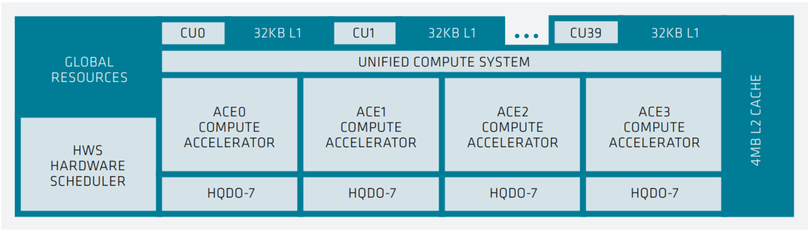

AMD Instinct 架构与 AI 系统
沿一组线程的访存与矩阵乘，理解 CDNA、HIP 和 ROCm，再把同一套计算带到模型训练与推理服务。
Instinct 架构与存储
Instinct 加速卡与 ROCm 软件栈
给一句话做分类时，程序先把每个词表示成一排数。模型中的线性层把这排数分别与几列权重相乘、求和，得到下一排数。把几百个词叠成矩阵后，不同输出格可以同时算。AMD 的 Instinct 加速卡把大量这样的算术交给 GPU。CPU 准备输入、发起计算和处理结果，反复使用的权重可以一直留在卡上的高带宽显存（HBM）里。
先用一行输入 [1，2] 和两列权重 [3，5]、[4，6] 算一次。第一个输出是 1 乘 3 加 2 乘 5，得 13；第二个是 1 乘 4 加 2 乘 6，得 16。下一行输入 [2，1] 仍用这两列权重，得到 11 和 14。一次调用让 GPU 产生四个输出。把两次输入排在一起，可以在卡内重复利用同一块权重。
ROCm 是 AMD 的 GPU 软件平台。用 PyTorch 写出矩阵乘，框架负责张量和求导；ROCm 的矩阵库为形状、精度和卡型选择实现；HIP 运行时把工作送进 GPU 的执行队列。自己开发新算子时，可以直接用 HIP C++ 写在卡上运行的函数，这种函数叫 kernel。
| 一次线性层中的对象 | 归谁管理 | 这个例子里实际保存的内容 |
|---|---|---|
| 主机输入 | CPU 与框架 | 两行词向量和两列模型权重 |
| 设备张量 | 框架的设备内存分配器 | HBM 中连续存放的元素以及框架记录的形状、步长 |
| kernel 启动 | HIP 运行时与 GPU | 读对应行、列，累加点积并写入四个输出格 |
| 后续层 | 同一设备上的下一项计算 | 直接读取输出 [13，16]、[11，14] |
以下硬件规格按具体型号引用。程序示例以 Linux 上的 ROCm 环境为背景，算例里的线程数、矩阵和请求长度专为手算选取。第一步可以运行 rocminfo 查看 GPU agent 的架构名，再用 hipcc --version 记录编译器版本。部署已有程序时，核对 ROCm 版本支持的 GPU、操作系统和驱动组合。
从主机上的两张表到卡上的一层计算
输入表的每一行对应一个词，两列对应这个词的两项特征。权重表的每一列决定怎样合出一个新特征。矩阵乘之后给两个新特征分别加 −12 和 −15，再用 ReLU 把负数归零。第一行的点积 (13, 16) 变为 (1, 1)，两项都保留。第二行的点积 (11, 14) 变为 (−1, −1)，最终两项都是零。
import torch
if torch.version.hip is None or not torch.cuda.is_available():
raise RuntimeError("此示例需要可用的 ROCm PyTorch 设备")
print(torch.version.hip, torch.cuda.get_device_name(0))
x_cpu = torch.tensor([[1., 2.], [2., 1.]])
w_cpu = torch.tensor([[3., 4.], [5., 6.]])
x, w = x_cpu.to("cuda"), w_cpu.to("cuda")
y = x @ w
out = (y + y.new_tensor([-12., -15.])).relu()
print(y.cpu().tolist(), out.cpu().tolist())PyTorch 在 ROCm 版本中也使用 torch.cuda 和设备名 "cuda"。torch.version.hip 给出这份框架关联的 HIP 版本，get_device_name 给出运行时可见的卡名。.to("cuda") 将两张主机表各复制一次到设备。y.new_tensor 让偏置与矩阵乘结果使用同一种类型和设备。两次 .cpu() 才为核对而取回结果。如果下一层也在 GPU 上，可以把 out 直接传下去。
框架算子、设备程序与执行队列
沿 x @ w 向下看，PyTorch 的 _matmul_impl 先检查两个输入的维数。两者都是二维时，源码进入 dim_tensor1 == 2 && dim_tensor2 == 2 分支。这里没有传预分配输出，于是调用 tensor1.mm(tensor2)。不同形状的向量或一批矩阵会走其他分支，GPU 后端再根据设备和数据类型处理所选的算子。
框架看到的是矩阵乘，GPU 最后执行的是许多线程运行的设备程序。HIP 流把同一条执行队列中的工作按依赖排好。矩阵乘结果尚在设备上时，主机就能提交接下来要加偏置的操作，后者在对应结果可读后执行。单独计时一条 Python 语句常常只包含提交工作所花的时间。想知道设备什么时候算完，可以等待事件，或像上例那样取回输出逐格核对。
权重转置后的第一项输出
将权重转置后，第一列会从 (3, 5) 变成 (3, 4)，第一行点积从 13 变为 。两张表即使仍是两行两列，交换权重两轴也会改变模型。
AMD · HIP 编程模型 · AMD · Linux 系统与 GPU 支持表 · PyTorch · ROCm 后端 · PyTorch 二维矩阵乘分支
CDNA 的芯粒、计算单元与显存
一张 MI300X 上的计算资源分布在八个计算芯粒里。计算芯粒称为 XCD，每个 XCD 有 38 个启用的计算单元，合计 304 个。计算单元简称 CU，一批线程在 CU 上执行指令，把暂时用到的数放在寄存器，把一个线程块需要共用的数据放在 CU 上的本地数据共享存储区（LDS）。输入张量和最终输出通常存放在 HBM。芯粒经 I/O 芯粒和封装内互连访问显存。
| 型号 | 架构与编译目标 | 整卡显存（GiB） | 整卡启用 CU | 单 CU 的 LDS（KiB） |
|---|---|---|---|---|
| MI250X | CDNA 2 · gfx90a | 128 | 220，两个 GCD 各 110 | 64 |
| MI300X | CDNA 3 · gfx942 | 192 | 304，八个 XCD 各 38 | 64 |
| MI325X | CDNA 3 · gfx942 | 256 | 304，八个 XCD 各 38 | 64 |
| MI350X | CDNA 4 · gfx950 | 288 | 256，八个 XCD 各 32 | 160 |
MI250X 把两个图形计算裸片（GCD）装进同一封装，每个 GCD 在系统中对应一个 GPU 设备。每个 GCD 各连 64 GiB HBM，两个设备合计 128 GiB。给单个设备分配 80 GiB 连续张量，就会超过这一侧的本地容量。MI300X 在单分区配置下向程序呈现一张设备，八个 XCD 共同处理发给这张设备的计算任务。
MI300X 与 MI325X 的架构目标相同，后者的显存容量和峰值带宽提高了。MI350X 改用 gfx950，单 CU 能用的 LDS 增大。假设每个线程块占用 40 KiB LDS，只考虑 LDS 的容量，64 KiB 能放一个块，160 KiB 能放四个。编译器使用的寄存器、每个块的线程数和硬件驻留上限还会限制同一时刻实际驻留的块数。
矩阵单元支持的输入格式也随代际变化。例如 MI300 系列 FP8 的 FNUZ 编码与 MI350 系列的 OCP FP8 编码使用不同的特殊值约定。把量化后的模型移到另一代硬件时，要核对权重文件的编码、尺度和算子支持的格式。即使每个元素都占一个字节，同一个字节也可能被两种格式解释成不同的数。
练习 · 两块工作区的驻留条件
每块申请 36 KiB，两个块共需 72 KiB。MI300X 的一个 CU 无法同时容下这两个块的 LDS；MI350X 有 160 KiB，按 LDS 单项预算最多能放四个这样的块。
MI300X 的一个 XCD 内部


先看图中的四个 ACE，它们负责把工作组派给 CU。图上画了 40 个 CU 位置，其中 38 个在该产品的一个 XCD 上启用。因此整卡规格里的 304 来自八个 XCD 各 38 个启用 CU。一个线程块要让线程通过 LDS 协作，得把这组线程交给同一个 CU，不能把这个块的 LDS 分散到八个芯粒去凑空间。
图中的 4 MB L2 由这个 XCD 的 CU 共享。例如两个工作组都要读同一片权重，后一组有机会命中已有的缓存行。LDS 的使用方式不同，程序明确指定哪几个线程把哪些元素写入它，并在其他线程读取前同步。缓存是否命中由实际地址与访问次序决定，LDS 中受控的共享则只覆盖同一工作组。
一个线程块从 HBM 到寄存器的数据量
假设一个块处理 32 行、32 列的 BF16 输入，每个位置只写一个 BF16 结果。一个输入窗口共 1024 个元素，占 2048 字节，结果也占 2048 字节。若要把同一输入窗口用于两轮不同的局部计算，可以先从 HBM 读到 LDS，再让线程反复取自己需要的邻近位置。两轮都从 HBM 重新取窗口，按有效输入计要读 4096 字节。若硬件缓存已经命中了一部分，实际 HBM 流量会低于这个数。
线程正在算的累加值通常留在寄存器。一旦每个线程保留的中间值太多，会减少同一 CU 可同时驻留的波前，甚至需要额外存取。选择一个分块时，要同时看每块的 LDS 和每线程寄存器。整卡 HBM 容量用于估计能放下多大的模型和数据集。
HIP 运行时看到的逻辑设备
#include <hip/hip_runtime.h>
#include <cstdio>
int main() {
int count = 0;
if (hipGetDeviceCount(&count) != hipSuccess) return 1;
for (int dev = 0; dev < count; ++dev) {
hipDeviceProp_t p{};
if (hipGetDeviceProperties(&p, dev) != hipSuccess) return 1;
std::printf("%d %s %s CU=%d wave=%d HBM=%.2f GiB\n",
dev, p.name, p.gcnArchName, p.multiProcessorCount,
p.warpSize, p.totalGlobalMem / 1073741824.0);
}
}将程序保存为 devices.cpp，用 hipcc devices.cpp -o devices 编译，再执行 ./devices。dev 枚举当前进程可见的逻辑设备，gcnArchName 可用来核对编译目标，totalGlobalMem 按字节报告当前设备的显存总量。对双 GCD 的 MI250X，要逐行读各设备的容量。训练任务实际还能分配多少，还要扣除已有分配，可用 hipMemGetInfo 查询当前选中设备的空闲量。
AMD · Instinct 型号规格 · AMD · MI250 裸片与互连 · AMD · MI300 微架构 · AMD · CDNA 3 与 CDNA 4 的执行差异
线程块、波前与访存顺序
HIP 程序员在一个 kernel 里描述一个线程要做的事。一次启动会创建很多线程，先把它们编成块（block），再把所有块组成网格（grid）。GPU 把一个块放到一个 CU 上执行；块里的线程按硬件宽度编组。CDNA 2、3、4 的这一组有 64 个线程，叫一个波前（wavefront）。同一波前内每个位置叫一个 lane，执行同一条指令时，各 lane 可以使用不同的数据地址。
处理 130 个元素时，取每块 64 个线程，启动三个块。块号从 0 开始，三个块的第一个线程分别处理位置 0、64、128。前两块全部有效，末块只有 lane 0、1 分别写 128、129；其余位置落在输入结尾之外，需要边界判断。发起读指令时，一组相邻线程访问相邻元素，更容易让硬件用较少的内存事务取齐所需数据。
例如行主序矩阵每行 128 个 FP32 数。行主序表示一行挨着一行存放，FP32 每个元素占 4 字节。波前按列号走，同一行前四个 lane 的字节偏移是 0、4、8、12。改为按行号走，同一列前四个 lane 的偏移是 0、512、1024、1536。两种方式使四个线程请求的有效数据都是 16 字节，后一种需要访问相隔很远的位置。观察实际传输量时还需看对齐、缓存命中和具体指令。
寄存器保留线程自己的中间值，LDS 让一个块内的线程交换数据。一个线程写入 LDS 后，其他线程要在约定的块内屏障之后使用。两个不同块各有各的 LDS，需要跨块交换结果时，通常让第一轮写到全局显存，再按执行队列的顺序启动下一轮读取。
二维线程位置与波前编号
在二维块里，线程的 x 方向先连续编号。若块形状为 (32, 4)，局部编号等于 。行 0 的 32 个线程和行 1 的 32 个线程于是处在同一个 64 路波前。局部位置 (x=3, y=1) 对应第 35 个 lane，(3, 2) 则属于第二个波前的 lane 3。把二维图像按一行排布到设备内存时，选择哪个维度交给 x 方向，就会影响相邻 lane 是否读相邻字节。
同一个波前里遇到不同分支时，硬件可借助执行掩码，只让满足当前路径条件的 lane 更新自己的结果，再去执行另一条路径。例如偶数 lane 计算平方、奇数 lane 计算绝对值时，数据不会串到相邻线程，但两条路径都可能占用执行时段。若一整组线程都走同一分支，控制流更易保持一致。
波前内的寄存器交换
把输入换成整数 1 到 130，目标是求和。每个线程先拿一个数，波前的后半部分把自己的部分和提供给前半部分，再按 16、8、4、2、1 的距离逐轮合并。第一轮 lane 0 将 1 与 lane 32 的 33 相加得到 34。下一轮加的是 lane 16 已合并好的 17 与 49。六轮后 lane 0 拿到整组的和。
__global__ void wave_sums(const int* x, int n, int* partial) {
const int tid = threadIdx.x;
const int i = blockIdx.x * blockDim.x + tid;
const int lane = tid % warpSize;
int sum = i < n ? x[i] : 0;
for (int step = warpSize / 2; step; step /= 2)
sum += __shfl_down(sum, step, warpSize);
if (lane == 0)
partial[(blockIdx.x * blockDim.x + tid) / warpSize] = sum;
}用两个 128 线程块启动，输出留四个整数。__shfl_down 读取同一波前另一个 lane 的寄存器，warpSize 来自目标设备。尾部线程把自己的初值设成 0，也执行同样的交换。只让 lane 0 写出最终值，四个位置分别是 2080、6176、259、0。末块的第一个波前只有 129 和 130 两个有效输入，它们仍会合并成 259。最后把四份部分和相加得到 8515。
两种同步范围在这个例子里很直观。交换直接跨同一波前的 lane。若想让同一块的两个波前再合成一份，可由各自的 lane 0 把两个数写入 LDS，全块线程都到达 __syncthreads() 后，再由一个线程读取这两个位置。块内有线程需要参加屏障时，尾线程也应到达这处屏障。
波前投票与输出位置
假设要把一列传感器读数中的正数挤到一起。一条 CDNA 波前的前四个 lane 分别读到 −2、7、0、5，其余读数全为零，只有 lane 1 和 3 举手。__ballot 把每个线程的判断收成一张 64 位掩码，最低四位由高到低是 1010。数一遍掩码中的 1，就知道本波前要写两个位置。
__global__ void positives(const int* x, int n, int* out, int* count) {
int i = blockIdx.x * blockDim.x + threadIdx.x;
int lane = threadIdx.x % warpSize;
int value = i < n ? x[i] : 0;
auto mask = __ballot(value > 0);
int base = 0;
if (lane == 0 && mask)
base = atomicAdd(count, __popcll(mask));
base = __shfl(base, 0);
auto earlier = mask & ((1ULL << lane) - 1);
if (value > 0) out[base + __popcll(earlier)] = value;
}启动时选 64 或 128 个线程一块，给 out 留 n 个整数的位置，并用 hipMemset(count,0,sizeof(int)) 初始化设备计数器。只有 lane 0 调用 atomicAdd，它一次性领走两个相邻位置，并拿到更新前的计数。假设计数起初为 4，新的计数为 6，__shfl(base,0) 把开始位置 4 告诉同一波前。
lane 1 左边没有举手者，写 out[4] = 7；lane 3 左边只有 lane 1 举手，写 out[5] = 5。代码中 (1ULL << lane)-1 保留本 lane 之前的低位，__popcll 数其中有几个 1。线程越过 n 时用 0 参加投票。不同波前谁先领号由设备调度决定；若结果要求维持整条输入的顺序，可以先写出各波前的正数个数，按波前编号求前缀和，把各自的起点事先定下来。
HIP 与算子开发
第一个 HIP 算子的启动与校验
在卡上把一列传感器读数放大两倍，再加上固定偏移 1。先用 130 个容易核对的数，位置 0 放 0，位置 129 放 129，期望两个端点输出 1 和 259。把下面的完整程序存为 affine.hip。主机端的错误检查会指出失败的 HIP 调用。
#include <hip/hip_runtime.h>
#include <cstdio>
#include <vector>
#define CHECK(expr) do { auto s = (expr); if (s != hipSuccess) { \
std::fprintf(stderr, "%s: %s\n", #expr, hipGetErrorString(s)); return 1; } } while (0)
__global__ void affine(const float* x, float* y, int n) {
int i = blockIdx.x * blockDim.x + threadIdx.x; // 块起点加块内编号
if (i < n) y[i] = 2.0f * x[i] + 1.0f; // 只给真实元素写结果
}
int main() {
constexpr int n = 130, threads = 64;
std::vector<float> in(n), out(n); // 主机上的输入和结果
for (int i = 0; i < n; ++i) in[i] = float(i);
const size_t bytes = n * sizeof(float);
float *x, *y;
CHECK(hipMalloc(&x, bytes)); // 在设备上留出输入空间
CHECK(hipMalloc(&y, bytes)); // 输出另占一块设备内存
CHECK(hipMemcpy(x, in.data(), bytes, hipMemcpyHostToDevice));
affine<<<(n + threads - 1) / threads, threads>>>(x, y, n);
CHECK(hipGetLastError()); // 检查启动配置
CHECK(hipDeviceSynchronize()); // 等执行结束，并检查执行错误
CHECK(hipMemcpy(out.data(), y, bytes, hipMemcpyDeviceToHost));
CHECK(hipFree(x));
CHECK(hipFree(y));
for (int i = 0; i < n; ++i) {
if (out[i] != 2.0f * i + 1.0f) return 2; // 逐个位置比较期望结果
}
std::printf("first=%.0f last=%.0f\n", out.front(), out.back());
}hipcc -O2 --offload-arch=gfx942 affine.hip -o affine
./affine编译命令给 MI300X 生成 gfx942 设备代码。启动式中的整除先用 130 加 63 得 193，再除以 64 取整，结果为三个块。末块第 1 号线程的全局下标是 129，读到 129，写出 259。两个缓冲各占 520 字节，所以第一次主机到设备复制只传输入的 520 字节，取回结果时再传 520 字节。
运行时把 kernel 排入流（stream）。一个流里的工作按提交顺序执行。若要反复处理很多输入，可以先分配一次缓冲，把后续 kernel 串在同一流里，直到主机真正需要结果再取回；这样中间值始终留在显存。上面的显式同步方便第一次开发时找到错误，性能测量中则应记录实际需要等待的地方。
练习 · 尾块中的最后一个写入者
长度改为 193 时需要四个块。第四块的第 0 号线程处理下标 192，写出 385；它之后的 63 个线程跳过读写。
设备指针的分配、写入与读取
in.data() 指向主机向量的第一项，x 指向卡上 520 字节的显存，两边需要通过复制关联起来。hipMalloc 只留空间，尚未把 0 至 129 放进去。第一次 hipMemcpy 的源地址是 in.data()，目的地址是 x。核函数里的 x[i] 实际会读取设备基地址加 字节处的 FP32 数。第二次复制的方向相反，源地址 y 指向卡上算完的输出，out.data() 才是主机可逐项核对的位置。
例如末元素偏移为 516 字节，一个 FP32 占据偏移 516 至 519。若把 bytes 错填成元素数 130，就会只复制前面 130 个字节。端点或中间元素出错时，从分配容量、复制字节、线程对应下标三处按相同单位逐项检查。
固定网格与跨步循环
还可以固定启动两个块，每块仍有 64 个线程，共 128 个线程。线程先各自处理一个元素，剩下两个元素由最前面的线程再走一轮。总线程数 128 是下一次跨越的距离，同一次循环中相邻线程仍读连续的地址。
__global__ void affine_stride(const float* x, float* y, int n) {
int first = blockIdx.x * blockDim.x + threadIdx.x;
int stride = gridDim.x * blockDim.x;
for (int i = first; i < n; i += stride)
y[i] = 2.0f * x[i] + 1.0f;
}块 0 线程 0 处理下标 0 和 128，写出 1 和 257。线程 1 处理 1 和 129，写出 3 和 259。再后面的线程处理完第一项，加上 128 就越过末端，因此循环停止。可以据此单独构造只有 1、刚好 128、刚好 129 个元素的输入，分别覆盖空闲线程、完整一轮和刚进入第二轮三种情形。若 API 支持长度零，主机应直接返回空结果，省去零工作量的启动。
流中的启动参数与设备事件
在原程序中，用下列片段替换第一次核启动与设备同步。将上面的设备函数放在 main 之前，输入复制和结果取回代码保持原来的位置。
hipStream_t stream;
hipEvent_t begin, end;
CHECK(hipStreamCreate(&stream));
CHECK(hipEventCreate(&begin));
CHECK(hipEventCreate(&end));
CHECK(hipEventRecord(begin, stream));
affine_stride<<<2, 64, 0, stream>>>(x, y, n);
CHECK(hipGetLastError());
CHECK(hipEventRecord(end, stream));
CHECK(hipEventSynchronize(end));
float elapsed_ms;
CHECK(hipEventElapsedTime(&elapsed_ms, begin, end));
std::printf("kernel %.4f ms\n", elapsed_ms);
CHECK(hipEventDestroy(begin));
CHECK(hipEventDestroy(end));
CHECK(hipStreamDestroy(stream));尖括号里的四项依次是网格块数、每块线程数、每块额外动态 LDS 字节数和流。本例未使用动态 LDS，所以第三项为 0。两个事件作为标记排在核的前后。主机等待末事件后读取时间差，得到这段设备队列区间的毫秒数。若要连输入复制一起测，可把起点移到相应异步复制之前，并保证复制和核使用同一条流。若要测客户端经历的完整延迟，则还需计入主机准备、提交和取回结果。
主机函数、设备函数与核函数
读这段 HIP 程序时，可以从调用者辨认谁在执行。CPU 上的 main 申请两块显存，决定发几个块，并把设备指针和尺寸交给整张卡。带 __global__ 的函数是网格入口，启动一次后，各个逻辑线程都执行同一段函数体。只有它们读取的线程编号不同。普通的设备辅助函数用 __device__ 标记，一个线程调用它，只继续计算这个线程的数。把一个纯算术函数同时标为 __host__ __device__，便可由 CPU 的参考程序和 GPU 的核共同调用。
二维网格与带行间距的矩阵
把同样的变换用在 3 行、5 列上。用 x 方向选列、y 方向选行，设每块 4 列、2 行。为覆盖全矩阵，x 方向需要两块，y 方向也需要两块。块 (1,1) 的线程 (0,0) 对应全局第 2 行、第 4 列，正是最后一个有效元素。同块的线程 (1,0) 会得到列号 5，已超出范围。以输入 填数，最后一个有效输入是 24，输出是 49。
__host__ __device__ inline float scaled(float x) {
return 2.0f * x + 1.0f;
}
__global__ void scale_rows(const float* x, size_t pitch_x,
float* y, size_t pitch_y, int rows, int cols) {
int col = blockIdx.x * blockDim.x + threadIdx.x;
int row = blockIdx.y * blockDim.y + threadIdx.y;
if (row >= rows || col >= cols) return;
auto in = reinterpret_cast<const char*>(x) + row * pitch_x;
auto out = reinterpret_cast<char*>(y) + row * pitch_y;
reinterpret_cast<float*>(out)[col] =
scaled(reinterpret_cast<const float*>(in)[col]);
}连续主机矩阵相邻行起点差 5 个 FP32，共 20 字节。用 hipMallocPitch 分配设备矩阵时，传入有效行宽 20 字节与行数 3，它还会返回设备上相邻两行起点的字节距离 pitch。这个距离可以大于 20。代码先把基址视为字节指针，跳过 row 个 pitch，再转成 FP32 指针读取 col 项。若某次分配返回 128 字节，元素 (2,4) 距基址 字节；实际程序采用每次分配各自返回的 pitch。
constexpr int rows = 3, cols = 5;
size_t width = cols * sizeof(float), px, py;
float *dx, *dy;
std::vector<float> in(rows*cols), out(rows*cols);
for (int r=0; r<rows; ++r)
for (int c=0; c<cols; ++c) in[r*cols+c] = float(10*r+c);
CHECK(hipMallocPitch(reinterpret_cast<void**>(&dx), &px, width, rows));
CHECK(hipMallocPitch(reinterpret_cast<void**>(&dy), &py, width, rows));
CHECK(hipMemcpy2D(dx, px, in.data(), width, width, rows, hipMemcpyHostToDevice));
dim3 block(4,2), grid((cols+3)/4,(rows+1)/2);
scale_rows<<<grid,block>>>(dx, px, dy, py, rows, cols);
CHECK(hipGetLastError());
CHECK(hipDeviceSynchronize());
CHECK(hipMemcpy2D(out.data(), width, dy, py, width, rows, hipMemcpyDeviceToHost));
CHECK(hipFree(dx));
CHECK(hipFree(dy));
for (int i=0; i<rows*cols; ++i) if (out[i] != scaled(in[i])) return 2;hipMemcpy2D 从每行只复制 width 个有效字节，下一行分别按源、目的的行距找到起点。因此同一条复制调用可以连接紧凑排列的主机矩阵和带填充的设备矩阵。输入若已经是连续的一维数组，前面的 hipMalloc 和一次普通复制就足够。
HIP 流、事件与双缓冲
处理连续批次时，CPU 可在 GPU 计算第 0 批时准备第 1 批。想进一步把第 1 批的主机到设备复制和第 0 批的计算重叠，需要两份不会相互覆盖的设备缓冲。HIP 的流描述入队顺序，事件（event）记录某条流已执行到哪个点。另一条流可等待这个事件，让 GPU 自行处理依赖。
// copy 和 compute 是已创建的两个流。ready、used 各含两个已经创建的事件。
// slots 是两份设备输入缓冲；host[batch] 是可供异步复制的页锁定主机输入。
// 每批输出有独立空间 dst[batch]，调用方保证 host 输入存活至复制完成。
for (int batch = 0; batch < batches; ++batch) {
int s = batch % 2;
if (batch >= 2) hipStreamWaitEvent(copy, used[s], 0); // 等旧一轮计算读完
hipMemcpyAsync(slots[s], host[batch], bytes, hipMemcpyHostToDevice, copy);
hipEventRecord(ready[s], copy); // 记录新输入复制完成点
hipStreamWaitEvent(compute, ready[s], 0); // 未到齐前不能读取
affine<<<blocks, threads, 0, compute>>>(slots[s], dst[batch], n);
hipEventRecord(used[s], compute); // 此槽可以再被覆盖
}
hipStreamSynchronize(compute); // 所有输出现在可供下游使用批 0 用槽 0，批 1 用槽 1，批 2 又要写槽 0。程序在提交批 2 的复制前，令复制流等批 0 的“读完”事件。若只让计算等复制，程序仍可能在批 0 尚未读完时覆盖其输入。主机输入还必须在异步复制期间保持有效。能否实际重叠取决于设备复制能力、内存类型、队列和带宽竞争。
假设三个批次复制各 2 毫秒，计算各 3 毫秒，两条流水都一次处理一批。先串行执行共 15 毫秒。理想双缓冲中复制是 0–2、2–4、5–7 毫秒，第三批要等槽 0；计算是 2–5、5–8、8–11 毫秒。端到端节省 4 毫秒。用 rocprofv3 的复制和 kernel 轨迹核对重叠区间，再比较总完成时刻。
三份输入与两个槽的读写次序
把第 0、1、2 批输入分别设成 (1, 2)、(10, 20)、(100, 200)。每批仍然做加倍再加一，因此三个目的缓冲应依次得到 (3, 5)、(21, 41)、(201, 401)。若第 2 批抢先覆盖了第 0 批的输入槽，第 0 批可能读到 100 或 200，甚至前后两项分别来自两批。单独运行一批时这种错误不会出现。
slots = [None, None]
slot_free = [0, 0]
dma = compute = 0
result = {}
for batch, src in enumerate(([1, 2], [10, 20], [100, 200])):
slot = batch % 2
begin = max(dma, slot_free[slot])
dma = begin + 2
start = max(compute, dma)
compute = start + 3
slot_free[slot] = compute
slots[slot] = list(src)
result[batch] = [2*v + 1 for v in slots[slot]]
print(batch, slot, (begin, dma), (start, compute), result[batch])slot_free[0] 在安排第 0 批后变成 5。第 1 批在时刻 4 完成复制，此时搬运通路有空，但第 2 批选中的槽 0 仍在用。max(dma, slot_free[slot]) 因而取 5，第 2 批在时刻 7 才可供计算。代码按批号保存输出，即使输入槽循环使用，三批结果也不会写进同一个目的位置。
页锁定主机缓冲与事件的代次
hipHostMalloc 可申请页锁定主机缓冲。其物理页在 DMA 期间保持可用，适合反复异步传输。可在循环外为每个在途输入分配一块，填好后提交 hipMemcpyAsync。当主机要改写上一轮的同一块输入缓冲时，应确认那一次从主机取数的复制已完成。这个时刻早于或等于设备算完该批的时刻。运行结束后，用 hipHostFree 释放对应的主机内存。
跨流等待要针对正确的一次记录。第 0 批提交计算前，先在复制流记录 ready[0]，再向计算流提交等待。第 2 批提交复制前，复制流等到的 used[0] 此时来自第 0 批。等第 2 批填入并启动，才能把同一事件对象记录为第 2 批的完成点。若把几次记录都提前做完，等到的就可能是另一轮工作。
输出回传与设备等待
若下游也在 GPU 上，可在计算流里直接提交下一层。若结果要交给 CPU，增加从设备到主机的异步复制，并把它排在本批计算完成之后。若输出也是两个槽轮换使用，还要在该槽再次被 kernel 写入前，确认上一次回传已读完。这样，输入槽的最后一位使用者是计算核，输出槽的最后一位使用者则可能是复制引擎。
在时间线上分别找 H2D、kernel 和 D2H 三种区间。上图给出的 11 毫秒止于最后一批核结束。若要求最后一批的结果已经回到主机，应把最后一笔 D2H 完成时刻作为终点，比较两版程序时沿用同一个终点。
固定计算步骤的 HIP Graph
假设每批输入都要连续做两次“乘 2 加 1”。普通流每批提交两次核；HIP Graph 可以先记下“先写临时缓冲，再读取临时缓冲写结果”这两个步骤及其次序，之后每批只需从 CPU 发出一次图启动。输入值会变，图中记录的设备地址在每次重放时仍要有效。
// 已建流 s，已分配 dx、tmp、dy；三者各能容纳 n 个 FP32 元素。
hipGraph_t graph;
hipGraphExec_t exec;
CHECK(hipStreamBeginCapture(s, hipStreamCaptureModeGlobal));
affine<<<blocks,threads,0,s>>>(dx,tmp,n);
affine<<<blocks,threads,0,s>>>(tmp,dy,n);
CHECK(hipStreamEndCapture(s,&graph)); // 得到两个节点及依赖
CHECK(hipGraphInstantiate(&exec,graph,nullptr,nullptr,0));
for (int k=0; k<2; ++k) {
CHECK(hipMemcpyAsync(dx,host_in[k],bytes,hipMemcpyHostToDevice,s));
CHECK(hipGraphLaunch(exec,s)); // 重用操作顺序，读取本批 dx
CHECK(hipMemcpyAsync(host_out[k],dy,bytes,hipMemcpyDeviceToHost,s));
}
CHECK(hipStreamSynchronize(s)); // 两批结果都已回到主机
CHECK(hipGraphExecDestroy(exec));
CHECK(hipGraphDestroy(graph));假设两批页锁定主机输入依次为 (1,2)、(10,20)，各有独立的主机输出。第一批在 tmp 中得到 (3,5)，在 dy 得到 (7,11)；第二批先得到 (21,41)，再得到 (43,83)。两批都在同一条流上，第二次覆盖 dx 时第一批已经用完。捕获结束时只得到操作模板，执行时读取的是刚复制的新数据。若要同时执行两个批次，还要像双缓冲例子那样为在途工作安排各自的存储和依赖。AMD · HIP Graph 的捕获与重放。
块内规约与跨块归并
推理中要取一行的和或最大值。若让每个线程都向一个全局地址加数，许多线程会争用同一位置。可以先给每个块分一小段，让线程把各自的输入放到 LDS，再两两相加。第一轮每个块写一个小计，第二轮把这些小计继续相加。
template<int B>
__global__ void block_sum(const float* x, float* sums, int n) {
__shared__ float v[B]; // 每个块独有的 B 个槽
unsigned lane = threadIdx.x;
unsigned pos = blockIdx.x * B + lane;
v[lane] = pos < n ? x[pos] : 0.0f; // 末块用加法单位元补齐
__syncthreads(); // 所有槽写好，再开始配对
for (unsigned step = B / 2; step > 0; step /= 2) {
if (lane < step) v[lane] += v[lane + step];
__syncthreads(); // 整个块进入下一轮
}
if (lane == 0) sums[blockIdx.x] = v[0]; // 每块只交付一个小计
}代码要求块大小 B 是 2 的幂，启动时实际线程数也取 B。用 B 等于 4 算输入 [1，2，3，4，5，6]。第一步时步长为 2，0 号线程取槽 0 和 2，1 号线程取槽 1 和 3。第二步把前两槽的结果相加。表中只列仍将参与下一步的位置。
| 块 | 装入的四个数 | 步长 2 后的有效值 | 步长 1 后写出的值 |
|---|---|---|---|
| 0 | 1，2，3，4 | ； | 10 |
| 1 | 5，6，0，0 | ； | 11 |
第二个 kernel 的输入是 [10，11]，只需一个四线程块。补上两个零，第一次配对得到 10 和 11，第二次得到 21。两个 kernel 在同一条流里先后启动，第二个能读到上一轮所有块写出的结果。真实长行可把 B 调到 128 或 256 给一个块多个波前。代码中的屏障放在条件分支外，少算一次加法的线程仍参与全块同步。
练习 · 全是负数时的尾块补齐
若把求和改成最大值，尾块需要用负无穷补齐。对负数 [−5，−6] 补零会引入一个比所有输入都大的值，最终错误地选出零。
十七个数经过三次启动的结果
把输入改成 1 至 17，块大小仍取 4。第一次需要五个块。前四个块分别负责 1 至 4、5 至 8、9 至 12、13 至 16，最后一个只读 17，剩下三项填零。第二次对五个小计求和，还需要两个块，直到第三次才只剩一项。
| 轮次 | 本轮输入长度 | 块数 | 写入的全部有效小计 |
|---|---|---|---|
| 1 | 17 | 5 | 10、26、42、58、17 |
| 2 | 5 | 2 | 136、17 |
| 3 | 2 | 1 | 153 |
第二轮第 0 块先把槽 0 的 10 与槽 2 的 42 相加，槽 1 的 26 与槽 3 的 58 相加，得到 52、84。下一次块内屏障过后，0 号线程才读取 84，得到 136。一个屏障只协调这个线程块，同一轮的不同块之间从未读取彼此的小计。
两块工作区的轮换
多个块的开始和结束顺序由 GPU 决定。若直接把第一轮小计覆盖到原始输入开头，靠后的块可能提前改写靠前块还没读的数据。分开本轮输入和输出，并在相邻轮次交换两块临时空间，就能让每一层都读取完整的前一层。
template<int B>
void launch_sums(const float* input, float* tmp0, float* tmp1,
float* result, int n, hipStream_t stream) {
const float* current = input;
int pass = 0;
while (n > 1) {
int blocks = 1 + (n - 1) / B;
float* next = blocks == 1 ? result : (pass % 2 ? tmp1 : tmp0);
block_sum<B><<<blocks, B, 0, stream>>>(current, next, n);
current = next;
n = blocks;
++pass;
}
if (pass == 0)
hipMemcpyAsync(result, input, sizeof(float), hipMemcpyDeviceToDevice, stream);
}函数沿用上面的 block_sum，要求 B 是至少为 2 的二次幂。1 + (n - 1) / B 对正长度向上取整。临时区各留出第一轮块数那么多的浮点数就足以容纳后续更短的结果。current = next 只改变下次启动要传的设备地址，GPU 队列保证下一轮在同一流里排在上一轮之后。输入本来就只有一项时，直接复制到结果地址即可。
运算顺序与浮点误差
同一组整数 1 至 17 在 FP32 中可精确表示，这里的小计也能精确表示。但浮点加法每一步都有舍入，换一棵规约树就可能改变最后几位。例如在 FP32 中，先将 1 加到一亿上，小量会在舍入时丢失，随后减一亿得到 0。若先把一亿和负一亿配成一对，再加 1，结果是 1。对一般浮点输入检查规约，宜同时看绝对误差和相对误差，并用较高精度的参照值解释差异。
分块矩阵乘与矩阵单元
把矩阵乘交给 GPU，可以先让一个线程负责一个输出格。左矩阵 A 有两行三列，右矩阵 B 有三行两列，结果 C 就有两行两列。两个输出列都要读同一行 A，两个输出行也都要读同一列 B。线程块可把一片 A、一片 B 一起搬进 LDS，供块内线程反复使用。
| 行号 | 矩阵 A 的这一行 | 矩阵 B 的这一行 |
|---|---|---|
| 0 | 1，2，3 | 7，8 |
| 1 | 4，5，6 | 9，10 |
| 2 | — | 11，12 |
四个线程排成两行两列，每个线程固定一个输出。沿公共的三个位置，每次取两个。第一片覆盖位置 0 和 1，左上格先算 1 乘 7 加 2 乘 9 得 25；同一片中右上格读同一行 A，算 1 乘 8 加 2 乘 10 得 28。第二片只剩位置 2，把缺失位置补零。左上格再加 3 乘 11 得 58，右上格再加 3 乘 12 得 64。左下格为 4 乘 7 加 5 乘 9 加 6 乘 11 得 139；右下格为 4 乘 8 加 5 乘 10 加 6 乘 12 得 154。
下面是行主序 FP32 教学内核。M、N 分别是输出的行数和列数，K 是沿点积累加的长度；启动块是 T 行 T 列，网格的 x 方向覆盖输出列、y 方向覆盖输出行。用上例可取 T 等于 2。
template<int T>
__global__ void tiled(const float* a, const float* b, float* c, int M, int N, int K) {
__shared__ float at[T][T], bt[T][T];
int x = threadIdx.x, y = threadIdx.y;
int row = blockIdx.y * T + y, col = blockIdx.x * T + x;
float acc = 0;
for (int k = 0; k < K; k += T) {
at[y][x] = row < M && k+x < K ? a[row*K + k+x] : 0; // 搬 A 的一行
bt[y][x] = k+y < K && col < N ? b[(k+y)*N + col] : 0; // 搬 B 的一行
__syncthreads(); // 两片都已到齐
for (int j = 0; j < T; ++j) acc += at[y][j] * bt[j][x];
__syncthreads(); // 槽位可供下一片覆盖
}
if (row < M && col < N) c[row*N + col] = acc;
}每个线程最后从寄存器写一个输出。单个满片有 T² 个输出，每个输出做 T 次乘加，合计 T³ 次乘加；协同装入两片只需 2T² 个输入元素。这个比值随 T 增大而上升，但 LDS、寄存器和线程数也在增加。
CDNA 还能让整个波前用矩阵指令 MFMA 做小矩阵乘加。rocWMMA 把一个波前共同持有的一块操作数称为 fragment。相邻的元素可能分布在不同 lane 的寄存器里。一个波前共同调用 load_matrix_sync 装入两块操作数，用 fill_fragment 把累加块清零，沿 K 的分片调用 mma_sync，最后用 store_matrix_sync 写回整块。教学内核里的四个独立标量累加器，在这里由整个波前协作维护。
AMD 的 Composable Kernel（CK）进一步把分块、加载、计算与写回组织成可组合的 C++ 部件。CK Tile 的 MI300 GEMM 实例分别讨论了协同加载、通过 LDS 重排，以及面向 MFMA 的寄存器布局。看这段实现时，先认出每个块负责哪些输出格，再追一片 K 如何被全局加载、重排和累加。芯片里的矩阵指令用哪种 fragment 形状，要按输入类型和所选内核查表。
同一波前的矩阵乘加片段
AMD 的 rocWMMA 半精度示例将一块输出选成 16 行、16 列，每轮沿归约方向读 16 个位置。A 按行保存，B 按列保存，乘加的累加片段用 FP32。把前面的手算矩阵放进这种尺寸时，先用零填满空格。为了让两次归约都产生贡献，把原来的第三个通道放到通道 16。头两项位于第一片，第三项位于第二片，数学上的点积保持不变。
import numpy as np
a = np.zeros((16, 32), dtype=np.float16)
b = np.zeros((32, 16), dtype=np.float16, order="F")
a[:2, :2] = [[1, 2], [4, 5]]
a[:2, 16] = [3, 6]
b[:2, :2] = [[7, 8], [9, 10]]
b[16, :2] = [11, 12]
acc = np.zeros((16, 16), dtype=np.float32)
for start in (0, 16):
aa = a[:, start:start+16].astype(np.float32)
bb = b[start:start+16, :].astype(np.float32)
acc += aa @ bb
print(acc[:2, :2])
assert np.array_equal(acc[:2, :2], [[58, 64], [139, 154]])第一轮的左上 2 × 2 是 [[25, 28], [73, 82]]。第二轮增加 [[33, 36], [66, 72]]。其余输出一直是零。波前的所有 lane 合作维护 256 个逻辑输出元素，API 负责把对应的输入和部分和分配到各 lane 的寄存器。只有整个波前一起执行，才完成这一块矩阵运算。
rocWMMA 样例中的起始地址与行列跨度
官方 simple_hgemm.cpp 用 cRow 和 cCol 表示输出块左上角。在 K 方向的第 i 项开始新一轮时，A 的起点写成 a + cRow * lda + i。因为 A 按行存，一行的物理跨度为 lda。B 的起点是 b + i + cCol * ldb，它按列存，整列的物理跨度为 ldb。两个表达式定位的都是同一个归约位置 i。
在这里的 16 行、32 列 A 和 32 行、16 列 B 中，若没有额外填充，A 的行跨度与 B 的列跨度恰好都是 32。加载第二片时 i=16，两个基地址各向后走 16 个半精度元素。mma_sync(fragAcc, fragA, fragB, fragAcc) 读取上一轮的累加片段再写回同一逻辑片段，所以第二轮从 25 继续累加到 58。
样例还支持把原 C 按系数加到乘积上。归约结束后它加载 C，对每个片段元素组合乘积项和原 C 项，再将结果按行写回 D。若系数分别为 1 和 0，D 就是这个算例的矩阵乘结果。沿源码检查布局时，可以给 A、B 填不同的行列数值。误把 B 当作行主序后，程序仍能读到合法地址，算出来的列却会对不上。
LDS 中的数据复用与线程协作
在前面的标量核中，一轮读 个输入，产生 次乘加。取 T 为 16，一块 A 和一块 B 共 512 个 FP32 数，占 2048 字节，可产生 4096 次乘加。每个 A 元素供 16 个输出列使用，每个 B 元素供 16 个输出行使用。CK Tile 进一步将一个较大的线程块输出切成多个波前片段，让全局加载方向、LDS 排布和矩阵指令需要的寄存器排布各自匹配。读性能报告时，可分别追踪全局读取、LDS 重排和 MFMA 发射，定位是哪一段没有及时供应下一片数据。
AMD · MI300 的 CK Tile 分块 GEMM · AMD · CK 算子融合实例 · AMD · rocWMMA 的分片加载、累加与存储 · AMD 半精度矩阵乘样例
rocBLAS、hipBLASLt 与 MIOpen
常用的稠密矩阵乘可以直接交给 rocBLAS。它按 BLAS 约定接收矩阵地址、形状、是否转置以及相邻两列的间距。沿用刚才的 A、B 和 C，按列存储时依次写入 A 的第一列 [1，4]、第二列 [2，5]、第三列 [3，6]。B 的两列依次是 [7，9，11]、[8，10，12]。
// h 是已创建的 rocblas_handle；A、B、C 是设备指针。标量取主机指针模式。
const float alpha = 1.0f, beta = 0.0f;
rocblas_sgemm(h, rocblas_operation_none, rocblas_operation_none,
2, 2, 3, // M、N、K
&alpha, A, 2, // A 的相邻两列间隔 2 个元素
B, 3, // B 的相邻两列间隔 3 个元素
&beta, C, 2); // 新结果覆盖 C，列间隔为 2alpha 乘在矩阵积上，beta 乘在原 C 上。这里 beta 为零，结果内存顺序是 [58，139，64，154]。逐行显示便是 [58，64]、[139，154]。如果连续存放的 A、B 来自行主序张量，可先按它们的真实布局准备参数，或用 hipBLASLt 的布局描述符表达行列顺序。调换输出显示顺序无法修复传错的输入步长。
hipBLASLt 适合需要指定计算精度、内存布局和矩阵乘收尾操作的场合。比如后续要加按输出行广播的偏置 [1，−2]，上例两列分别变成 [59，137]、[65，152]。在支持的布局和类型下，可用偏置 epilogue 在写回前完成。若先把四个 FP32 中间值写回显存，再由第二个 kernel 读出，逻辑上多了一写一读，共 32 字节。实际 HBM 字节数还受缓存命中影响。
卷积常交给 MIOpen。以一个单通道 图像和 卷积核为例，步长 1、无补零，输出有 个位置。若卷积核四个元素全为 1，第一个结果就是图像左上角四格之和。MIOpen 根据输入形状、布局、类型和允许的临时工作区寻找实现。固定形状反复运行时，可以先完成方案搜索，再用选出的方案测稳态时延。对首次请求有要求的服务还要单独计入搜索或编译时间。
从一个输出格回到 BLAS 的地址参数
看输出的第二行第一列。按列存放时，A 的第二行散在下标 1、3、5，三个数是 4、5、6。B 的第一列就在下标 0、1、2，依次是 7、9、11。用这三对数算出 ，写到 C 的下标 1。再算第一行第二列，A 用下标 0、2、4，B 用下标 3、4、5，结果 64 写到 C 的下标 2。代码中的 lda 和 ldb 都以元素为单位。若 A 的每列末尾多留一个空位，它仍有两行三列，只需把列间距由 2 改成 3。
a = [1, 4, 2, 5, 3, 6]
b = [7, 9, 11, 8, 10, 12]
c = [0] * 4
for col in range(2):
for row in range(2):
c[row + 2 * col] = sum(a[row + 2*k] * b[k + 3*col] for k in range(3))
print(c)
image = [[1,2,3],[4,5,6],[7,8,9]]
for row in range(2):
print([sum(image[row+i][col+j] for i in range(2) for j in range(2))
for col in range(2)])hipBLASLt 的算子描述与执行方案
在 hipBLASLt 中，描述符先把计算方式与实际内存布局告诉库。运算描述符记录累加精度、是否转置和收尾操作，矩阵布局描述符分别记录 A、B、C、D 的元素类型、行列数和物理跨度。C 是可参与加权的旧结果，D 是目的矩阵。例如旧 C 的左上角为 10，若系数取 1 和 0.5，新 D 的左上角就是 ，然后才按所选收尾方式加偏置。
用 hipblasLtMatmulAlgoGetHeuristic 查询在当前布局、类型和工作区上限内可选的方案。返回数量大于零时才取候选算法，按它的工作区要求准备设备缓冲，再调用 hipblasLtMatmul。布局或批形状改变后，原来缓存的选择也应重新核对。
MIOpen 卷积中的窗口与工作区
将上例图像按行填入 1 至 9。窗口向右移动一列时，左上四项 换成 。下一行重复同样的滑动，得到 24、28。这里批量、输入通道、输出通道都为 1。NCHW 格式的输入形状为 (1, 1, 3, 3)，权重为 (1, 1, 2, 2)，输出为 (1, 1, 2, 2)。把步长改成 2 后，每个方向只容一个完整窗口，输出只剩 12。
即时模式用 miopenConvolutionForwardGetSolution 获取当前问题的候选方案及标识。根据选中方案申请工作区后，可用 miopenConvolutionForwardCompileSolution 提前准备其设备程序。反复执行同一问题时把方案标识和实际张量交给 miopenConvolutionForwardImmediate。工作区用于算法执行期间的临时结果，卷积的四个最终输出仍写在独立的输出张量里。
AMD · rocBLAS 矩阵乘参数 · AMD · hipBLASLt 偏置与结果布局 · AMD · MIOpen 的方案搜索与工作区
图邻接表与 rocSPARSE 的稀疏乘法
图神经网络的一步聚合可以写成稀疏矩阵乘向量。每一行代表一个目标顶点，每个非零位置的列号指向一个邻居，非零值代表边的权重。把邻居特征乘上权重再求和，就得到目标顶点的新特征。没有边的位置直接略过。
压缩稀疏行格式（CSR）用三组数记录图。教学图有三行，行偏移 [0, 2, 2, 5]，列号 [0, 2, 0, 1, 2]，边权 [2, 1, 1, 3, 2]。行 i 的边从偏移 i 对应的位置起，到下一个偏移之前结束。三顶点特征依次为 [4，5，6]。
| 目标顶点 | 边下标区间 | 实际读取的特征与加权输出 |
|---|---|---|
| 0 | [0，2) | 读列 0、2，得到 |
| 1 | [2，2) | 没有邻居，求和为 0 |
| 2 | [2，5) | 读列 0、1、2，得到 |
__global__ void csr_rows(const int* offsets, const int* cols, const float* weights,
const float* x, float* y, int rows) {
int row = blockIdx.x * blockDim.x + threadIdx.x;
if (row >= rows) return; // 一个有效线程负责一个顶点
float acc = 0;
for (int e = offsets[row]; e < offsets[row+1]; ++e) {
acc += weights[e] * x[cols[e]]; // 边表连续，特征按列号间接读
}
y[row] = acc; // 空行也有定义良好的输出
}行的边数很不均匀时，同一波前里短行很快结束，长行仍需循环。还可考虑让一个波前协同处理长行再规约；这一改动会改变每个线程负责的边数以及 LDS 或寄存器间交换开销。AMD 的 rocSPARSE 提供 rocsparse_spmv，通过矩阵和向量描述符指定布局、索引与数值类型。对于固定稀疏结构，可按接口要求先查询临时空间、预处理，再重复计算。评估迭代图算法时，可以把一次预处理与后续多轮 SpMV 分别计时。
练习 · 空行与间接地址
若把列号序列的最后一个 2 改成 1，第三行的最后一项从 变成 ，输出从 31 降为 29。行偏移和该行的边数均不变。
行偏移、边编号与邻居编号
看第三行。线程先从 offsets[2] 和 offsets[3] 取到 2 和 5，因此循环变量 e 会取 2、3、4。中间一次迭代中，3 是边在压缩表里的下标。cols[3] 才是邻居编号 1，读到的邻居特征是 x[1]=5。与这条边对应的权重是 weights[3]=3，这一项给输出增加 15。若直接以边下标读取特征，三个顶点的图甚至没有 x[3] 这个位置。
每个邻居携带两项特征时的聚合
保留同一张图，让每个顶点都携带两个数。第 0、1、2 个顶点分别携带 (4, 1)、(5, −1)、(6, 2)。行号和边权都不变，一次读出的邻居编号可用于两个通道。这就是稀疏矩阵乘稠密矩阵（SpMM）。
offset = [0, 2, 2, 5]
col = [0, 2, 0, 1, 2]
weight = [2, 1, 1, 3, 2]
features = [[4, 1], [5, -1], [6, 2]]
for row in range(3):
out = [0, 0]
for edge in range(offset[row], offset[row + 1]):
neighbor = features[col[edge]]
for channel in range(2):
out[channel] += weight[edge] * neighbor[channel]
print(row, out)第一行收到 。空行的两个通道都留为零。第三行的第一项为 31，第二项为 。可在结果的第 0 列找到原 SpMV 的所有输出。若每个线程负责一个通道，同一行的线程会重复读取边号和列号。让一组线程合作处理一行并分担不同通道，可以共用边结构。代价是要安排组内交换，而且短行或特征维很小时可能空闲不少 lane。
rocSPARSE 的描述符与迭代开销
矩阵描述符需要 3 行、3 列、5 个非零项，行偏移长度为 4，列号和数值各长 5。若这三张表放在 GPU 上，描述符记录真实的设备地址、索引宽度、零起始索引和数值类型。输入、输出向量则各有 3 项。用库的求和形式时，令乘积系数为 1、旧输出系数为 0，目标才与上面的教学核一致。若旧输出系数取 1，即使当前行为空，其输出也会保留原值。
先用查询阶段取得所选算法需要的临时字节数，再准备工作区。如果该算法有预处理阶段，就在图结构确定后执行一次。多轮传播中可以只替换特征向量，重复计算阶段。测量时把准备时间单列。预处理花 2 毫秒，每次新算法省 0.1 毫秒，要超过 20 次计算才会减少累计耗时。
模型框架与注意力
ROCm PyTorch 的张量与自动求导
加载 ROCm 版 PyTorch 后，设备名称仍写 cuda，同一套上层接口会调到 HIP。torch.version.hip 给出这一构建所用的 HIP 版本；设备名称和属性可以在程序运行的环境里查询。用一个有两个参数的小模型，就能走完设备分配、前向、反向和参数更新。
import torch
assert torch.version.hip and torch.cuda.is_available()
dev = torch.device("cuda:0")
print(torch.cuda.get_device_name(dev), torch.version.hip)
x = torch.tensor([[1., 2.], [2., 1.]], device=dev) # 两个样本，各有两个特征
w = torch.tensor([[1.], [0.]], device=dev, requires_grad=True)
target = torch.tensor([[2.], [2.]], device=dev)
pred = x @ w # 形状从 2×2 和 2×1 变为 2×1
loss = ((pred - target) ** 2).mean() # 对两个样本的误差平方取平均
loss.backward() # 求损失对两项权重的导数
print(pred.detach().cpu().tolist(), w.grad.cpu().tolist())
with torch.no_grad():
w -= 0.1 * w.grad # 更新参数，学习率取 0.1
print(w.detach().cpu().tolist())两个预测依次是 1 和 2，对应目标都是 2，误差为 −1 和 0，平均平方误差是 0.5。平方的导数带来系数 2，对两个样本取平均又除以 2，因此预测处的梯度仍是 [−1，0]。第一项权重的梯度按第一列输入加权，是 1 乘 −1 加 2 乘 0，得 −1；第二项同理得 −2。以 0.1 为步长，从原权重 [1，0] 分别减去 −0.1、−0.2，更新为 [1.1，0.2]。
反向需要读取前向用过的输入，框架会保留求导所需的张量。服务推理可以用 torch.inference_mode() 关闭这套记录。示例把结果搬回主机供读者比对；若把同样的 .cpu() 或 .item() 放进每一步训练的内层，会让 CPU 等设备给出结果。排查训练间隙时要看这些等待落在哪一层循环里。
一步更新后的下一次反向
把参数恢复为最初的 (1, 0)，保留上面定义的输入与目标，用以下循环替换原来的单步计算。两轮都重新求一次预测与损失，因为第二轮使用的权重已经改变。
for step in range(2):
w.grad = None
pred = x @ w
loss = (pred - target).square().mean()
loss.backward()
print(step, pred.detach().flatten().tolist(), loss.item(),
w.grad.flatten().tolist())
with torch.no_grad():
w.add_(w.grad, alpha=-0.1)| 步 | 权重 | 两个预测 | 损失 | 权重梯度 | 更新后权重 |
|---|---|---|---|---|---|
| 0 | (1, 0) | (1, 2) | 0.5 | (−1, −2) | (1.1, 0.2) |
| 1 | (1.1, 0.2) | (1.5, 2.4) | 0.205 | (0.3, −0.6) | (1.07, 0.26) |
第二步预测误差为 (−0.5, 0.4)。第一个权重对两个预测的影响系数分别为 1 和 2，所以梯度为 。第二个权重的梯度是 。这一次两个权重向不同的方向移动，原因可以追溯到两个样本的误差已经异号。
backward() 默认把本轮梯度累加到叶子张量的 .grad。循环开头的 w.grad = None 让当前步从一份新梯度开始。若有意让两个微批共同完成一次更新，则应对齐两个微批的损失归一化方式，待两次反向都完成后才更新一次。no_grad() 中修改的仍是原参数，下一轮前向会读取新值。
张量视图、设备与拷贝
用 x.T 访问输入的列时，PyTorch 可以改变形状和步长而保留同一份底层数据。对本例的连续矩阵，原来按行步长 (2, 1) 访问，转置视图改成 (1, 2)。矩阵库需要同时知道形状和步长才读得对。若后端某一条路径要求连续布局，显式调用 contiguous() 会在需要时另建连续副本，性能轨迹里可能因此出现复制。
detach() 返回与原计算图分离的张量，通常仍共享原张量的存储。cpu() 对设备张量执行回传。只想在本卡继续算误差时可以保留设备结果，等需要打印少数标量时再回传。若在训练和评估之间切换带 Dropout 或 BatchNorm 的模型，model.eval() 控制模块的行为，inference_mode() 控制求导记录，两者分别作用在不同步骤。
Triton 的行块与融合 softmax
HIP C++ 逐线程分工，Triton 允许程序一次描述一块数组。对于每行独立的 softmax，可以给每个程序实例一整行。它先求最大值，再算指数与总和，最后直接写出该行的概率。中间指数留在程序实例内，省去了拆成多个独立算子时在全局内存中来回写读中间张量的步骤。AMD 的 Triton 示例用行号和列偏移构造地址，下面把同一方法用于行归一化。
import torch
import triton
import triton.language as tl
@triton.jit
def row_softmax(X, Y, width: tl.constexpr, B: tl.constexpr):
row = tl.program_id(0) # 一个实例负责一行
col = tl.arange(0, B) # B 是覆盖行宽的 2 的幂
pos = row * width + col # 连续行主序输入的元素下标
z = tl.load(X + pos, mask=col < width, other=-float("inf"))
z = z.to(tl.float32) - tl.max(z, axis=0) # 先减去本行最大值
exp_z = tl.exp(z)
prob = exp_z / tl.sum(exp_z, axis=0) # 求本行分母再归一化
tl.store(Y + pos, prob, mask=col < width) # 只写实际列
assert torch.version.hip
x = torch.tensor([[0., 0., 0.], [0., 1., 2.]], device="cuda")
y = torch.empty_like(x)
row_softmax[(x.shape[0],)](x, y, x.shape[1], triton.next_power_of_2(x.shape[1]))
torch.testing.assert_close(y, torch.softmax(x, dim=1), rtol=1e-5, atol=1e-6)输入有两行三列，网格启动两个实例，每个实例生成四个列号。第一行三个零加一个补位的负无穷，最大值为 0，指数为 [1，1，1，0]，有效三列的输出都是三分之一。第二行减去最大值 2 后得到 [−2，−1，0]，对应指数约为 [0.1353，0.3679，1]，除以总和 1.5032，结果约为 [0.0900，0.2447，0.6652]。补位位置既不计入分母也不写出。
教学程序要求二维连续布局、行宽大于零并能放进一个实例。行很宽或实例使用过多寄存器时，可把一行分成几片，先为每片求局部最大值与分母，再按共同基准合并。实际调优时，行宽、块大小和波前数量一起决定每个 CU 能同时推进多少行。先记录编译与预热，再以相同形状比较稳态；同一形状下核对数值误差和读写量。
程序实例里的四个地址
tl.program_id(0) 是程序实例编号，tl.arange 产生这个实例要处理的一组逻辑列。第二行的行号为 1，行宽为 3，四个候选元素地址依次是 3、4、5、6。地址 6 已经超出含六个元素的数组，tl.load 的掩码让它不发起实际读取，用负无穷取代它。若用零填补且三个真实分数都是负数，假列就会参与最大值和指数和。tl.store 单独接收同一掩码，是为了避免把这项计算结果写到输出范围之外。
一行在这里是一个 Triton 程序承担的工作。它包含多少个有效元素，与执行它的硬件线程数可以不同。BLOCK 决定编译器看见的逻辑块宽，num_warps 是编译该程序时的并行配置之一。在 AMD 后端需要结合目标架构的波前宽度看每组的分工。把行宽从 128 改成 129 时，按二次幂向上取整会把逻辑块从 128 扩至 256，即使新增的有效列只有一个。
非连续视图的输入与输出步长
把底层矩阵按行写成 (0, 10)、(0, 11)、(0, 12)。转置视图把逻辑第一行变成 (0, 0, 0)，第二行变成 (10, 11, 12)。相邻逻辑列在底层相隔两个元素。若仍用 row * width + col 读地址，第一行会错读成 (0, 10, 0)。给两个输入轴分别传入真实步长，可以直接处理这个视图。
@triton.jit
def softmax_view(X, Y, n: tl.constexpr,
sx0, sx1, sy0, sy1, BLOCK: tl.constexpr):
row = tl.program_id(0)
col = tl.arange(0, BLOCK)
live = col < n
x = tl.load(X + row*sx0 + col*sx1, live, other=-float("inf"))
x = x.to(tl.float32)
weight = tl.exp(x - tl.max(x, 0))
tl.store(Y + row*sy0 + col*sy1, weight / tl.sum(weight, 0), live)
base = torch.tensor([[0., 10.], [0., 11.], [0., 12.]], device="cuda")
x = base.T
y = torch.empty(x.shape, dtype=x.dtype, device=x.device)
softmax_view[(2,)](x, y, 3, *x.stride(), *y.stride(), BLOCK=4)
torch.testing.assert_close(y, torch.softmax(x, dim=1))输入步长是 (1, 2)，连续输出步长是 (3, 1)。第二行在输入里读地址 1、3、5，在输出里写地址 3、4、5。减去行最大值后，第二行仍得到 (−2, −1, 0)，概率与上一例第二行相同。可见共同增加 10 并不改变 softmax，但换了张量布局就必须换地址算法。
寄存器占用与分块归约的选择
对 257 列的有限分数，单实例可以取 512 个逻辑槽，掩去尾部 255 个。若寄存器用量成为瓶颈，可按列先做局部归约。例子中两片未经缩放的指数权重是 (1, 2) 和 (4)。前片以 2 为基准得到局部分母 1.5，后片以 4 为基准得到 1。要换用全行基准 4，前片分母再乘 1/2，合并后为 1.75。再按这个分母写三列输出，才会得到 (1/7, 2/7, 4/7)。拆成多个实例后，需要跨实例交换这些行状态，或另外启动归一化核。应对同一宽度比较省下的寄存器与增加的临时读写。
注意力得分与分块归一化
生成一句话时，当前位置要从之前各个位置取回有用的信息。每个位置提供一把“键”K 和一份“值”V，当前位置提供查询 Q。查询与一个键的点积表示匹配程度。把所有匹配分数送入 softmax，得到和为 1 的权重，再用这些权重求各份值的平均。
计算一条查询，设键和查询各有 d 个分量，历史共 S 行，每行值有 v 个分量。Q 的形状为 1×d，K 为 S×d，V 为 S×v。Q 乘 K 的转置产生 1×S 个点积，除以 d 的平方根得到分数行 z。softmax 沿这一行的 S 个位置归一化，最终输出是 1×v。
取 d 和 v 都等于 1，查询为 1，三个键为 [0，ln 2，ln 4]，三个值为 [2，5，8]。因为指数分别为 1、2、4，分母为 7，分子为 2 加 10 加 32，输出是七分之四十四。若直接把预填充期间每个查询和每个键的匹配分数都存到 HBM，序列变长时分数矩阵会迅速变大。
分块计算时可以让一个查询先读到前两行。取块内最大值 ln 2 为基准，两个指数权重降为 和 1。此时保存最大值、分母 1.5、加权分子 6。读第三行时发现最大值升到 ln 4，把旧分母和旧分子都乘上旧基准与新基准的指数比 ，得到 0.75 和 3。新行相对新基准的权重为 1，于是分母变成 1.75、分子变成 11。相除仍是七分之四十四。
| 读到的历史行 | 当前最大分数 | 已归一到当前基准的分母 | 同一基准下的分子 |
|---|---|---|---|
| 0、1 | ln 2 | ||
| 再读 2 | ln 4 |
在 Instinct 上可把键和值分片装入片上存储，保留每条查询的最大值、分母和输出累加量，最后写出一行。这给注意力库节省了中间分数矩阵的显存流量。AMD 的 vLLM 指南区分了可用于不同模型与阶段的注意力后端；选择后端时还要核对卡型、模型头维度、缓存类型与软件版本。
两个新查询与四行历史键值
一次补算两个新位置时，查询行号与它在整段序列里的位置相差一个偏移。假设旧缓存已有位置 0、1，新输入是位置 2、3。两条查询都取标量 1，四个键取 ln 1、ln 2、ln 4、ln 8。第一个查询只能读前三行。第二个可以读四行。若把查询局部下标 0 当成真实位置，程序会误以为第一行只能看键 0，得到完全不同的分母。
| 真实查询位置 | 参与的键行 | 指数权重 | softmax 分母 | 两列加权分子 |
|---|---|---|---|---|
| 2 | 0、1、2 | 1、2、4 | 7 | 44、−2 |
| 3 | 0、1、2、3 | 1、2、4、8 | 15 | 52、22 |
将值向量依次设为 (2, 0)、(5, 1)、(8, −1)、(1, 3)。位置 2 的第二列分子为 。位置 3 多读最后一行，该列增添 ，分母同时从 7 增为 15。每行内两个输出坐标共用一个分母。
import torch
from torch.nn.functional import scaled_dot_product_attention as sdpa
def chunk_attention(device):
q = torch.ones((1, 1, 2, 1), device=device)
k = torch.tensor([1., 2., 4., 8.], device=device).log().reshape(1, 1, 4, 1)
v = torch.tensor([[2., 0.], [5., 1.], [8., -1.], [1., 3.]],
device=device).reshape(1, 1, 4, 2)
qpos = torch.tensor([2, 3], device=device)
kpos = torch.arange(4, device=device)
mask = kpos[None, :] <= qpos[:, None]
out = sdpa(q, k, v, attn_mask=mask, dropout_p=0.)
ref = q.new_tensor([[44/7, -2/7], [52/15, 22/15]])
torch.testing.assert_close(out[0, 0], ref)
return out[0, 0]
if __name__ == "__main__":
print(chunk_attention("cuda"))q 的四个轴依次是批、头、查询位置和头宽。mask 是两行四列的布尔数组，在此接口里 True 表示该键可以参与计算。掩码沿批和头广播。这里键查询宽度为 1，缩放因子也是 1。值宽为 2，所以输出末两维是 (2, 2)。断言分别核对四个元素。
两个点积之间的片上数据
分块注意力的第一次矩阵乘产生一片匹配分数，每一行先按可见位置更新最大值和指数和。第二次矩阵乘把这一片指数权重乘对应的 V 块，得到输出各坐标的贡献。如果新块的最大值更高，旧的分子向量与旧分母要一起缩放。最后一个键块处理完，才有本查询行的最终分母。
在 GPU 上，波前协作完成矩阵片段的点积，逐行求和、取最大值和缩放又需要 lane 间交换。查询块越大，同一片 K、V 可服务更多查询，但要在寄存器中保留更多行状态和部分和。对比两个后端时须固定真实掩码、数据类型和头宽，先对照逐行输出，再核对是否避开了整张分数表的写回。
低精度表示、缩放与 Quark 校准
一张量里既有很小的数，也可能有一两个很大的数。把它们压进更短的编码，需要先决定一个刻度。设缩放系数 s 表示一个编码单位有多大，按该刻度把原值 x 换成可保存的值 q，使用时再换回近似值。实际 FP8 同时有指数和尾数，不同数量级的可表示值间距会变化。先用等间距的小整数网格，看清刻度和误差。
教学网格用 −7 到 7 的整数，选择 s 等于 。原值 [−2.4，0.2，3.0] 分别除以 得 [−4.8，0.4，6]，就近取整数得到 [−5，0，6]。还原为 [−2.5，0，3]，与原值的差依次为 [−0.1，−0.2，0]。如果同一张量出现 10，按原刻度需要编码为 20，超过可保存的最大编码 7，截断后只能还原到 3.5。扩大刻度可以覆盖 10，也会让较小值之间的间隔变大。
AMD Quark 将这种准备工作组织成校准、量化和导出。官方示例先加载模型与分词器，把校准语句送进模型，收集被量化张量的范围，再为权重、激活以及选定的 KV 投影设置量化规则，导出供 vLLM 使用的模型。想保住长提示上的精度，校准语料应覆盖业务里常见的提示长度和文本分布。静态尺度随导出的模型一起使用，动态尺度则在运行中从当前数据计算。
在 Instinct 上启用量化前要核对存储类型、缩放粒度和可用 kernel。权重压小可能降低 HBM 读取量，反量化和尺度读取也要占执行时间。例如教学权重矩阵有 个元素，从 BF16 改为每元素一个字节，纯权重从 32 KiB 降到 16 KiB；若每 128 个元素存一个 FP32 尺度，需 128 个尺度，另占 512 字节。KV 量化则单独影响历史缓存，每个 token 的节省量要按层数和 KV 头重新计算。
练习 · 量化误差对一个输出格的影响
前面两项原权重取 [−2.4，0.2]，输入取 [2，1]，精确点积是 −4.6。用 [−2.5，0] 重算得到 −5，输出差 −0.4，正好是两项权重误差分别乘输入再相加。对比模型时可先查单层误差，再用业务任务评估累积影响。
整数刻度与 FP8 指数字段
把整数刻度改为 10/7，四个原值 −2.4、0.2、3、10 的整数码依次变成 −2、0、2、7，还原为约 −2.857、0、2.857、10。数值 10 现在可以表示，原来的 3 却从完全可表示变成有误差。校准时看到一个极大值，是否要为它扩大整组刻度，需要把它出现的频率和典型位置的输出误差一起考虑。
FP8 还涉及每一个字节本身怎么解释。以 E4M3 的两个具体变体为例，字节 0x38 的符号位为 0，四位指数为 7，三位尾数为 0。E4M3FN 的指数偏置为 7，所以表示 1。E4M3FNUZ 的指数偏置为 8，同样的位模式解为 0.5。传递量化模型时，必须把权重采用的具体格式与加载路径相匹配。
import numpy as np
import ml_dtypes as md
bits = np.array([0x38, 0x40, 0x80], dtype=np.uint8)
for fmt in (md.float8_e4m3fn, md.float8_e4m3fnuz):
print(fmt.__name__, bits.view(fmt).astype(np.float32))
x = np.array([-2.4, 0.2, 3.0, 10.0])
for scale in (0.5, 10/7):
codes = np.clip(np.rint(x/scale), -7, 7)
print(codes, np.round(codes*scale, 3))view(fmt) 按指定类型解释已有字节，astype 再把读出的数值转换成 FP32 方便打印。第二个字节分别是 2 和 1。第三个字节 0x80 在 FN 中表示负零，在 FNUZ 中表示 NaN。直接换类型名来读取同一份文件会改变模型数值。若要保持原数值，需要解码后重新编码，并处理新格式的取值范围。
Quark 校准数据进入模型的位置
AMD 的示例把全局量化配置与按层覆盖的配置合进 quant_config，再构造 ModelQuantizer。quantize_model 接收模型和校准数据，让观察器收集选中模块在实际输入下的数值。随后冻结量化状态并导出。推理加载端需要识别导出的权重格式、尺度及对应层名，才能在点积时恢复正确的数值单位。
例如两个输出列的权重范围相差十倍，按列保存尺度时，两列的整数码都可以是 3。还原左列时乘左列尺度，右列要乘右列尺度。校对导出结果时先选定一层和一个输出格，核对每一组码和尺度，再比较量化前后的点积。单看文件体积或模型能成功加载，看不出尺度是否被错误地广播到另一列。
推理服务与长上下文
预填充、解码与分页 KV 缓存
用户提交四个 token 时，预填充阶段一次处理整个提示。在每一层，四个位置各自产生 K、V 并保存。因果掩码规定第一个位置只能看见自己，第二个能看见前两个，第四个能看见四个，共有 1 加 2 加 3 加 4 等于 10 个有效位置对。最后一个提示位置的输出用来预测首个新 token。
把这个新 token 送回模型时，解码阶段只为该 token 计算本层新的 Q、K、V。新的 K、V 接在原来的四个位置之后，查询要看五个位置。权重可以常驻 HBM，旧 K、V 也已经存在。下一步仍须读其中参与注意力的历史值，缓存省下的是重新投影历史 token 的工作。长上下文服务还要掌握每轮实际读取量和活跃请求的总容量。
vLLM 可以按固定大小的块管理 KV 缓存。教学例取每块两个位置，某请求的块表是 [4，1，7]。逻辑位置 3 除以 2，商 1、余 1，于是找块表第 1 项得到物理块 1，读取它的槽 1。位置 4 则在物理块 7 的槽 0。物理块在 HBM 哪里分配和 token 在句子里的先后是两件事，位置编码和因果关系仍沿逻辑位置计算。
| 逻辑位置 | 0 | 1 | 2 | 3 | 4 |
|---|---|---|---|---|---|
| 逻辑块 | 0 | 0 | 1 | 1 | 2 |
| 物理块 | 4 | 4 | 1 | 1 | 7 |
| 块内槽 | 0 | 1 | 0 | 1 | 0 |
算一张卡上的教学模型。设 L 是层数，H 是每层保存的 KV 头数，d 是每个头的键或值宽度，b 是每个分量占的字节数。每新增一个 token，要为每层同时存一份 K 和一份 V。下面按这张卡保存所有层和所有 KV 头来算。
取 32 层、8 个 KV 头、每头 128 个 BF16 分量，每分量 2 字节，单 token 是 131072 字节，即 128 KiB。长度 4096 正好占 512 MiB，16 条互不共享的同长度请求合计 8 GiB。若块大小改成 16，长度 17 的请求占两块、32 个槽，最后 15 个槽暂时空着。估并发时实际可用于 KV 的空间还要扣掉权重、执行临时区和其他常驻对象。
练习 · 逻辑行与物理行
前例的下一个 token 处在逻辑位置 5，沿用物理块 7 的槽 1；再下一个处在逻辑位置 6，此时才需为第四个逻辑块找新的物理块。
从页表读回一条完整的注意力行
只看一层中的一个标量头。为方便手算，把五个键取成自然对数 ln 1、ln 2、ln 1、ln 4、ln 2，当前查询取 1，值分别为 2、5、8、1、9。点积取指数后得到权重 1、2、1、4、2。下面的页记录直接存这组指数权重和值，专门追踪读哪一页、取哪一行。真实缓存保存的是 K、V，查询变化时需要重新计算权重。
blocks = [4, 1, 7]
pages = {4: [(1, 2), (2, 5)], 1: [(1, 8), (4, 1)],
7: [(2, 9), None]}
def value_at(position):
page, slot = divmod(position, 2)
return pages[blocks[page]][slot]
def attention(length):
data = [value_at(pos) for pos in range(length)]
denom = sum(weight for weight, _ in data)
numer = sum(weight * value for weight, value in data)
return numer, denom, numer / denom
print(attention(4), attention(5))
pages[7][1] = (1, 3)
print(attention(6))先只看前四个位置。块 4 提供分子 2 和 10，块 1 提供 8 和 4，总分子为 24，分母为 8，末位查询的输出为 3。下一轮访问位置 4，块 7 槽 0 的贡献是 18，分子变成 42，分母变成 10，结果为 4.2。再增加一个位置，块 7 槽 1 写入权重 1、值 3，总和变成 45/11。代码每轮均按真实长度遍历，已分配但尚未写入的槽不会进入 softmax。
两条请求的页占用与解码批次
保持每页两个位置，假设请求 A 长 5、请求 B 长 3，二者没有共享前缀。A 需三页、共六槽，B 需两页、共四槽。目前共分配十槽，只有八个位置有效。将这两个请求放进同一轮解码，各自先把一个新位置写进原来的末页，无需新分配物理页。下一轮两条请求都要跨到新页，调度器需一次准备两页。
| 轮次 | A 长度／页数 | B 长度／页数 | 两条请求合计有效位置 | 本轮新增物理页 |
|---|---|---|---|---|
| 初始 | 5／3 | 3／2 | 8 | 已有 5 页 |
| 各前进一次 | 6／3 | 4／2 | 10 | 0 |
| 各再前进一次 | 7／4 | 5／3 | 12 | 2 |
若预填充和解码在两组卡执行，源端块表里的 4、1、7 只是源端页号。传给解码组时，要按请求、层、头及逻辑块号找到目的端分配的页，再交接有效长度和首个新词。一次移交多少字节取决于是否传整页、是否已有可复用前缀及两组卡的分片方式。用上面的容量配置估算，4096 个位置的独占有效 KV 是 512 MiB，不能只按首词的几个字节估计跨组流量。
vLLM · 块表与注意力读取 · AMD · Instinct 上的 vLLM 服务 · AMD · 解码期间的 KV 读取
vLLM 的推理服务与并发批处理
vLLM 接收请求、把不同请求合在同一轮 GPU 执行，并管理它们的 KV 块。假设请求甲已有三个历史 token，请求乙只剩一个输出要生成。一次解码轮里两条请求各推进一步。乙生成结束后释放自己的私有块，调度器下一轮可以让请求丙占用腾出的空间。不同请求的长度、块表、下一个写入位置随轮次变化，批里的行号只在当前轮有效。
让两张 Instinct 共同承载一个模型时，可选张量并行，把层内的权重拆开。AMD 发布的 vLLM V1 指南给出了 ROCm 镜像、数据类型和支持矩阵。下面假设同机两张兼容卡均已暴露给容器，本地模型目录已经备好，并能由这个版本的 vLLM 加载。服务和基准客户端分别在两个终端运行。
vllm serve /models/model --served-model-name local-amd \
--dtype float16 --tensor-parallel-size 2 --port 8000vllm bench serve --backend vllm --base-url http://127.0.0.1:8000 \
--model local-amd --tokenizer /models/model --dataset-name random \
--random-input-len 512 --random-output-len 64 --num-prompts 100 \
--request-rate 4第一条让服务在端口 8000 监听，local-amd 是客户端请求里的模型名。第二条建立一组约定长度的输入，指定分词器目录、请求数量和平均到达率。先少量请求预热，再测固定负载。分别记录输入长度、实际产生的输出数、并发、首个 token 延迟（TTFT）、后续 token 的间隔和每秒交付的输出数。终止符会影响交付长度，比较两组结果时要核对实际输出 token 计数。
| 改变一项负载 | 跟踪的变化 | 接下去读哪一段记录 |
|---|---|---|
| 输入从 512 增至 4096，固定输出与到达率 | 排队和 TTFT 是否随提示变长 | 区分等待调度与实际 prefill kernel 区间 |
| 固定短提示，增大请求到达率 | 输出吞吐、尾部 token 间隔、KV 占用 | 看每轮活跃请求数，找超过服务目标时的负载 |
| 相同模型从 TP 1 改成 TP 2，前提是单卡可容纳 | 每轮层内计算和通信各花多久 | 比较同样 token 数的矩阵乘和 RCCL 集合通信 |
ROCm 指南列出了 AITER 等适用后端。AITER 是 AMD 面向推理优化的一组算子实现，部分模型可在注意力、低精度矩阵乘或专家层中调用它。核对实际选中的后端后，先比较一条固定输入的输出，再在相同负载下比时间线和服务指标。短 kernel 变快多少，要放回整轮调度和网络返回的时间里看。
三条请求的交付时刻
用毫秒作为时间单位。A 在时刻 0 到达，三个输出词分别在 9、14、20 交付。B 在时刻 3 到达，只生成一个词，时刻 12 就结束。C 在时刻 10 到达，两个词分别在 22、27 交付。先按请求编号整理时间，再算指标，同一个批次槽位中先后出现的 B 和 C 才不会被误算成同一个人的两次交付。
records = {"A": (0, [9, 14, 20]), "B": (3, [12]), "C": (10, [22, 27])}
tokens = 0
for name, (arrival, deliveries) in records.items():
ttft = deliveries[0] - arrival
gaps = [b - a for a, b in zip(deliveries, deliveries[1:])]
tokens += len(deliveries)
print(name, ttft, gaps)
print(tokens * 1000 / 27)A 的首词时延是 9 毫秒，后续间隔是 5 和 6 毫秒。B 的首词时延也是 9 毫秒，它只有一个输出，没有词间隔样本。C 的首词时延为 12 毫秒，唯一的词间隔为 5 毫秒。若把首次到达到最后一次交付的 27 毫秒作为观测窗口，三条请求共交付六个词，平均约为 222.2 词/秒。这是这段短记录的总体吞吐，不能把它当成 A 或 C 单独解码的速度。
到达率、活动批量与分块预填充
--request-rate 4 设置请求流的平均到达率。同一时刻还在运行多少条请求，取决于输入长度、生成长度、排队和服务速度，未必等于 4。若大量用户在短时间同时到达，调度器可能先等 KV 页或本轮 token 预算腾出空间。检查 TTFT 时，把请求进入队列、开始预填充、首词返回三个时刻分开记录。
假设本轮有 8 个位置可算，已有两条解码请求各需一个位置，新到的提示长 12。按优先安排这两个解码位置的示例规则，第一轮还能替新请求处理六个提示位置，第二轮再处理余下六个。已有用户可以在两轮各收到一个新词，新用户要等第二段预填充完成才得到首词。调大每轮预算时，还应核实原有用户两次交付之间有没有出现更长的停顿。
两卡服务中一次层内求和
例如一行输入为 (1, 2)，一个输出的两项权重是 (3, 5)。若按输入特征切权重，两卡分别得到 3 和 10，必须经归约得到 13 才能继续使用这个输出。每个解码轮都会用到类似的层内通信。若单卡和双卡都能容纳同一模型，观察改变并行度后首词时延、稳定词间隔、每卡显存与通信时间各自如何变化，可以区分显存容量收益与单请求时延的变化。
客户端发流式请求时，一个响应块有时会携带多个词。若只能记录块的到达时刻，就同时记下这一块的词数。把同一块拆成若干个零毫秒间隔会人为压低分位数。需要精确了解每个解码轮的完成时间时，可用服务端的轮次记录对齐客户端事件。
SGLang 的分离式推理与 KV 交接
预填充在长输入上一次处理许多 token，解码则按步推进。放在同一组卡上时，长提示进入执行队列会改变其他请求的解码间隔。AMD 的 MI300X 实例用 SGLang 把这两类工作放到不同 GPU 组。一组专门接提示并生成首词，另一组接手已有历史继续解码。两组之间增加了一次 KV 交接。
| 阶段 | 预填充组 | 解码组 |
|---|---|---|
| 请求登记 | 按请求号保存提示、位置与生成设置 | 为该请求预留能装下历史的目标块 |
| 首词与历史传输 | 完成提示各层计算，送出首词信息和所需 KV 块 | 把接收块绑定到本请求的逻辑位置 |
| 首次解码 | 在传输安全结束后回收源端的私有块 | 等所需历史可读，用首词做下一步输入 |
| 完成或取消 | 释放尚属源端的资源 | 回收目标块，避免迟到的数据写入已复用的空间 |
沿用每个 token 占 128 KiB KV 的模型，4096 个提示 token 交接 512 MiB 历史。假设源端和目的端布局一致，有效载荷带宽按 64 GiB/s 估算，连续传完这些字节需要 秒，约 7.81 毫秒。还要另算分配和排队、控制消息、离散块传输以及源端和目的端等待时间。SGLang 的 AMD 实例使用 RDMA 连接并处理非连续的内存片段，物理块号可在两端不同。
做服务实验时可保留同机混合部署作对照，统计相同到达序列里同时满足首词时延和后续间隔目标的请求数。若首词已很快而第一次到第二次输出的间隔很长，应把第二组的等待拆成目标块预留、数据传输和进入解码队列三个时间段。短提示尤其需要比较这笔交接时间与减少的排队时间。
两张页表中的同一个位置
把请求缩成五个提示位置，每页容纳两个位置。源端三页依次是 6、2、9，目的端为当前请求分配的三页是 3、8、1。每个数字代表一个位置已算好的 KV 记录。逻辑位置 3 在源端的页 2 槽 1，值为 13。到了目的端，它必须写进页 8 槽 1。物理页跳过了好几个编号，逻辑位置并没有改变。
src_ids, dst_ids = [6, 2, 9], [3, 8, 1]
src = {6: [10, 11], 2: [12, 13], 9: [14, None]}
dst = {page: [None, None] for page in dst_ids}
for position in range(5):
block, slot = divmod(position, 2)
dst[dst_ids[block]][slot] = src[src_ids[block]][slot]
ordered = [dst[dst_ids[p//2]][p%2] for p in range(5)]
print(dst, ordered)
assert ordered == [10, 11, 12, 13, 14]源端最后一页只有第一个槽有效。例子按有效位置传五份数据，若实现按整页发送则会送六个槽的空间。无论传多少字节，目的端都要把有效长度登记为 5，第一轮解码读取位置 0 至 4，并把首个新词对应的 KV 写到页 1 槽 1。实际模型还要对每一层、每个本地 KV 头做相应映射。
Mooncake 的分散内存传输
AMD 的 MI300X 示例在 SGLang 中使用 Mooncake 传输 KV，源端和目的端要能通过 RDMA 网卡连接。网卡可以根据已登记的内存地址与长度传输数据。上例中连续的三个逻辑块对应源端三段分散的物理内存。描述这三段时分别给出起始地址和字节数，就不必假设页 2 紧接页 6。完成通知决定什么时候能安全复用源缓冲，以及目标端什么时候可以放行依赖该数据的计算。
运行示例时，预填充实例和解码实例分别声明自己的阶段角色，路由器面向客户端。绑定 RDMA 接口时，要核对参加传输的每个进程实际能使用哪个设备。控制信息可以很短，但若目的池迟迟没有空页，源端此时并不能靠增大发送带宽让请求更快接手。
两池容量与达标请求数
假设固定观测十秒，共完成 100 条请求。其中 90 条首词时延达标，85 条后续间隔达标，只有 78 条两者同时达标。完成吞吐是每秒 10 条，同时满足两个目标的有效吞吐是每秒 7.8 条。两池扩容时，应当定位未达标的那 22 条各自等待在哪一步。提示处理慢可优先检查预填充池。交接后解码排队时间持续增长，则要检查目的池容量与批处理安排。
一次交接在 SGLang 源码中的顺序
在 AMD 实验使用的 v0.4.7.post1 中，路由器为一次请求带上同一个 bootstrap_room，同时向两端登记。解码端先分配自己的页，把目标位置发给预填充端。预填充端按源页和目的页建立对应关系，具备条件时可先传早已算好的整页，最后一块再交接首个输出 token 等元数据。解码端确认成功后，才让这个词接在原提示后面继续生成。路由登记 · 页地址与 Mooncake 传输 · 首个输出词的交接。
AMD 以 FP8 Llama 3.3 70B、一个预填充实例和一个解码实例测试。并发 128 时，输入/输出长度为 3200/800 的任务以首词 1000 毫秒为门限；1024/2048 的任务以 500 毫秒为门限，两者的每个后续词门限都是 25 毫秒。按每 GPU 的达标吞吐比较，AMD 分别报告最高 6.9 倍和 2.23 倍。该实验的推理服务由 SGLang 执行，压测请求从 vLLM 基准客户端发出。
并行草稿验证与有效交付量
普通解码每生成一个 token 都要让大模型走一遍。在单请求或小批量下，反复读大模型的权重很费时间。推测解码先用较轻的草稿器提出几个候选，再让目标模型在一次前向中验证这一段。采用贪心解码时，从左到右比较草稿与目标模型在同一前缀下选出的 token。前面一旦不匹配，后面草稿的前缀也随之失效。
设已交付的前缀是 P，草稿依次给出 [甲，乙，丙]。目标模型在 P 后选甲，在 P甲 后选乙，在 P甲乙 后选丁。前两个匹配，第三个用丁替换，这轮交付 [甲，乙，丁]。此前为“丙”或更深候选计算的临时缓存不能成为有效历史；下一步的逻辑前缀必须接在丁之后。随机采样要用相应的接受与纠正分布，贪心相等判断适用于本例的贪心策略。
以相同输入的教学计时比较。普通目标模型每步 8 毫秒，三步交付三个 token 共 24 毫秒。若草拟耗 3 毫秒、一次验证耗 10 毫秒，且本轮确实交付三个 token，则每 token 平均 毫秒。若每轮只交付一个，就成了 13 毫秒。采集时应记录草稿长度、实际交付 token 数、草拟与验证时间和请求并发，按总时间除以实际交付量。
AMD 的 Quark 实例在 MI350X 上训练 EAGLE3 系列草稿模型，用目标模型的信息训练更贴近目标输出的候选器。草稿训练和在线验证是两笔成本。面对业务提示，可以先看接受长度分布，再用相同的解码策略和随机性设置检查输出与时延。
验证批次里的四个位置
目标模型可以一次收到前缀和三个候选。因果掩码让每个位置只能看自己及左边的词。这样，前缀末尾那一行预测第一个候选，甲所在行预测第二个，乙所在行预测第三个，丙所在行还预测下一词。四行能同时计算，因为待送入的候选已经由草稿器写好。读结果仍须从左到右，先确认一行的前缀成立，才能使用它的预测。
| 目标行可见的末尾 | 所验候选 | 目标贪心选择 | 交付结果 |
|---|---|---|---|
| 前缀 P | 甲 | 甲 | 甲 |
| P、甲 | 乙 | 乙 | 甲、乙 |
| P、甲、乙 | 丙 | 丁 | 甲、乙、丁，结束本轮 |
| P、甲、乙、丙 | 无 | 戊 | 该行依赖丙，丢弃 |
如果第三行选丙，第四行就有了真实前缀，可以再交付戊。若第一行便选己，本轮只交付己。注意区分“已经告诉用户的词”和“已经跑过目标模型的输入”。在分歧例中，模型读过乙，选出了丁；它还没读过丁。下一轮把丁送进目标模型，才能得到丁自己的 K、V。
def verify(draft, target):
emitted = []
for pos, candidate in enumerate(draft):
pick = target[pos] # 目标在该前缀下的贪心选择
emitted.append(pick) # 交付目标选出的词
if candidate != pick:
return emitted # 首次分歧，后续行的前缀已失效
return emitted + [target[len(draft)]] # 全中时末行还可交付一个词
assert verify(list("甲乙丙"), list("甲乙丁戊")) == list("甲乙丁")
assert verify(list("甲乙丙"), list("甲乙丙戊")) == list("甲乙丙戊")
assert verify(list("甲乙丙"), list("己乙丙戊")) == ["己"]接受长度与每个交付词的成本
按上面的教学计时，三轮分别交付 3、4、1 个词，普通解码耗时 毫秒，推测解码耗时 毫秒。这组三轮的平均接受长度按 AMD 所用口径为 ，包括每轮目标模型保证交付的一个词。平均每轮交付量超过 时才省时间。统计总交付量能保留长短轮次各自的贡献；请求提前结束时按实际交付量计数。
AMD 的 MI350X 训练实例用目标模型自己续写出的文本作样本，把浅、中、深层隐藏状态送进草稿器，让它练习连续预测多个词。线上一次猜错就会截断整段，训练时也让草稿器接着自己的预测往下走。AMD 在贪心、每轮三个候选的 SPEED-Bench 测试中报告，代码类平均交付 3.33 个词，角色扮演类为 2.02 个。两者的验证流程相同，目标模型延续文本的方式影响了草稿被接受的长度。
目标模型的验证源码
vLLM 的 rejection_greedy_sample_kernel 把当前行的目标选择写到输出，再比较它与草稿的候选。首次不同时，这次写入留下了正确的替换词。所有候选都匹配时，内核读取末行的 bonus token，写入下一个输出位置。这里正好对应表中的第四行。vLLM 验证内核源码。
通信与并行训练
RCCL 集合通信与数据并行
一张卡装得下完整模型时，常用多张卡分着读不同样本。每张卡有一份相同的参数，得到的本地梯度却各不相同。为了让下一步参数继续一致，要先把这些梯度求平均。ROCm 的集合通信库 RCCL 负责在 GPU 之间完成这类共同操作。每个参加通信的进程在组内有一个编号，叫 rank。
| 操作 | 两张卡的输入 | 两张卡各自得到的结果 |
|---|---|---|
| AllReduce，逐元素求和 | 卡 0 有 [1，2]，卡 1 有 [3，4] | 两卡都得到 [4，6] |
| ReduceScatter，求和后分片 | 同上，每个分片一个元素 | 卡 0 得 [4]，卡 1 得 [6] |
| AllGather，按 rank 拼接 | 卡 0 有 [4]，卡 1 有 [6] | 两卡都得到 [4，6] |
以两卡各处理一个样本为例，本地梯度是 [1，2]、[3，4]。默认 DistributedDataParallel（DDP）的梯度同步效果是取平均，结果为 [2，3]。若旧权重是 [1，1]、学习率为 0.1，每卡都更新为 [0.8，0.7]。反向时 PyTorch 把若干已经就绪的梯度装进桶，以便一次提交较大的集体操作，也有机会和其他层的反向计算重叠。各卡需按一致的次序进入同一组集合通信。
下面的最小程序在单节点用 torchrun --standalone --nproc-per-node=2 train.py 启动。ROCm 版 PyTorch 暴露的分布式后端名为 nccl，在 AMD 栈上由 RCCL 实现。每个进程先绑定自己的本地设备，再建立通信组。
import os
import torch
import torch.distributed as dist
local = int(os.environ["LOCAL_RANK"])
torch.cuda.set_device(local)
dist.init_process_group("nccl")
rank = dist.get_rank()
g = torch.tensor([1., 2.], device=f"cuda:{local}") + rank * 2
dist.all_reduce(g, op=dist.ReduceOp.SUM) # 每卡现在都有 [4, 6]
g /= dist.get_world_size() # 显式求平均，此例得到 [2, 3]
print(rank, g.cpu().tolist())
dist.destroy_process_group()这段程序展示求平均的来路。使用 DDP 的训练程序由框架完成梯度同步。若两卡的本地损失是按有效 token 取平均，而且有效数分别为 2 和 6，简单平均会给短批次过高权重。这时应按有效 token 数加权。例如两个本地平均梯度是 1 和 3，全局平均为 () / 8，即 2.5。
两张卡之间的梯度分片
把卡 0 的四个梯度写成 [1,2 | 3,4]，卡 1 的写成 [5,6 | 7,8]。竖线划出两块，每块两个数。要让各卡最终拿到全部和，可以先让每卡负责加一半，再交换已经加好的两半。如此安排，每经过一条链路的是一块连续数据。实际 RCCL 会按消息大小和连接拓扑选择算法。
| 阶段 | 卡 0 | 卡 1 |
|---|---|---|
| 本地反向完成 | [1,2 | 3,4] | [5,6 | 7,8] |
| ReduceScatter 后各留一块 | [1+5,2+6] = [6,8] | [3+7,4+8] = [10,12] |
| AllGather 后按 rank 排列 | [6,8,10,12] | [6,8,10,12] |
| 两卡等权，每卡除以 2 | [3,4,5,6] | [3,4,5,6] |
在两卡示意中，每张卡两个阶段各发送两个 FP32 数，合计 字节的发送量，另收到 16 字节。在分片优化器中，若每张卡只负责更新自己那一块参数，第一阶段留下的分片就够它计算，何时再汇集取决于下一步需要哪部分参数。
通信桶的就绪次序
把最后一层记为 B、前一层记为 A。若 B 的反向用 3 毫秒、A 用 4 毫秒，两层的通信各用 2 毫秒，每层单独成桶，且通信和计算能完全重叠，则 B 在第 3 毫秒就绪，第 3 到 5 毫秒传 B 时，GPU 可以继续算 A。A 在第 7 毫秒就绪，第 9 毫秒通信完成。若把 A 和 B 合成一桶，则最早第 7 毫秒才能开始传。在真实系统里，一次传大桶也能省掉一次提交开销。调桶大小时，沿时间线看末尾究竟还有多少通信没被反向计算盖住。
按有效 token 加权的梯度
若某卡的本地损失对本地 token 取均值，反向给出的也是本地平均。前例先把平均梯度 1 和 3 还原为和，即 和 。全局有效数是 8，故每个 token 的平均梯度是 。使用默认 DDP 时，它随后还会对两个 rank 的梯度取平均。要在反向前校正，可以给本地平均损失乘以“进程数 × 本地有效数 / 全局有效数”。两卡系数为 0.5 和 1.5，DDP 最后算出 。每卡有效数应取自损失实际覆盖的位置，padding 位置不计入。
程序中的设备号与进程号
在两机、每机两卡的作业里，每台机器的 LOCAL_RANK 都可以是 0、1，全局 rank 则分别为 0、1、2、3。set_device 用前者选本机显卡，通信组用后者区分参与者。上面的张量初始化让每个 rank 都能贡献不同的数。all_reduce 原地改写 g，随后的除法直接使用相加后的结果。两卡程序若只在 rank 0 上调用 all_reduce，它会等卡 1 提交同一轮操作。打印可以只交给 rank 0，通信须由全组执行。
练习 · 三个进程的平均值
沿用程序的初始化，rank 2 的 g 是 [5,6]。三个进程相加得 [9,12]，再除以 3，每个进程都会读到 [3,4]。
AMD · RCCL 的通信与拓扑 · AMD · 多卡 DDP 与 FSDP · PyTorch · DDP 梯度同步 · PyTorch · 梯度钩子与 Reducer
张量并行、流水线与长序列分工
有时单层矩阵乘本身就放不下。张量并行（TP）把这一层的矩阵拆开，让几张卡一起算同一批 token。在 AMD 的 Megatron-LM 与 Primus 训练栈里，层内张量分片常和层间流水、数据并行组合。先算一对线性层，可以看出哪些阶段各卡能独立工作，哪些地方必须通信。
第一层取输入 [1，2]，用权重的两列 [3，5] 和 [4，6]。按列切成两张卡，卡 0 算出 13，卡 1 算出 16。假设下一层只输出一个数，两个输入通道的权重分别是 2 和 −1，按行放在这两张卡。卡 0 用本地的 13 算出 26，卡 1 用 16 算出 −16，把两数求和，得到 10。这样中间的两个通道一直在各自的卡上，只在第二层结束时归约。若输出还带一个偏置 3，在归约后加一次，结果为 13。
流水线并行（PP）把连续的层放在不同设备上。设前半模型和后半模型各占一张卡，每半处理一个微批各用一个时间槽。把两个微批 A、B 送进前向流水：第 1 槽前半算 A；第 2 槽前半算 B、后半算 A；第 3 槽后半算 B。两卡三槽共有六个可用位置，其中四个做了计算。微批增多后，固定的启动和排空时间分摊得更薄；训练还要安排反向和保留的激活。
| 分片的对象 | 每卡持有什么 | 同一次训练中最容易暴露的开销 |
|---|---|---|
| TP · 层内矩阵 | 一部分权重列或行 | 同层各卡间的集合通信 |
| PP · 连续模型层 | 一段完整层及其本地参数 | 边界激活传输、流水填充和排空 |
| CP · 上下文位置 | 一部分 token 的查询和局部键值 | 为本地查询提供其他卡上的历史键值 |
| DP · 样本 | 不同训练样本，参数可再分片 | 梯度归约或参数收集 |
长序列的上下文并行（CP）让不同卡负责不同位置。例如一条四 token 序列，A 卡持有位置 0、1，B 卡持有 2、3。B 卡的位置 3 拥有自己的查询，却要看两个分片里的四个历史位置。可以交换 K、V 分片逐块计算，再按前面注意力算例的最大值、分母、分子合并；A 卡的位置 0 只允许看第一个位置。通信分片和因果可见范围应分别跟踪。序列并行（SP）常用来把层归一化等逐 token 操作的激活按序列分片，和跨卡完成整行注意力的 CP 分工不同。
练习 · 八卡训练的进程组
一台八卡机器选 TP 为 2、PP 为 2，暂取 CP 为 1。一个模型副本用四卡，还可放两个数据并行副本。给每个副本喂不同样本；每个流水阶段的两张卡仍须同时执行该阶段的层内通信。
两个微批的一次训练
流水训练中，前半模型先算出激活，后半接着用这个激活算损失。反向时方向调转，后半发回“这个边界激活要怎样变，损失才会变小”的梯度，前半才有条件继续反向。把激活发送和梯度返回都画在同一条时间轴上，就能看见前向表里省略的等待。
| 时间槽 | 前半模型 | 后半模型 |
|---|---|---|
| 1 | A 前向，保存激活 | 等待 |
| 2 | B 前向，保存激活 | A 前向 |
| 3 | 等待 | B 前向 |
| 4 | 等待 | B 反向，传回梯度 |
| 5 | B 反向，释放 B 激活 | A 反向，传回梯度 |
| 6 | A 反向，释放 A 激活 | 等待 |
表中每次前向和反向都占一槽，传输耗时暂取零。两卡共有 12 个位置，实际工作 8 个，平均利用率为三分之二。早已到达的 A 激活在前半模型一直存到第 6 槽。如果调整排程，让就绪微批的反向早点开始，就能早点腾出它的激活空间。各卡之间的边界和单个微批的前后依赖仍一样。
跨卡注意力的一个输出
接着算四个位置的例子。取位置 3 的查询，让它对四把键的缩放点积分数依次为 0、ln 2、ln 4、ln 2，对应的值是 2、4、8、6。直接取指数得到权重比例 1、2、4、2，所以完整输出为 。现在让卡 B 用自己持有的查询先后计算两份键值，每份键值算完只保留三个数。
| 键值来源 | 局部最大分数 | 减去局部最大后的权重 | 分母 | 加权分子 |
|---|---|---|---|---|
| 卡 A 的 0、1 | ln 2 | 1/2、1 | 1.5 | 0.5 × 2 + 1 × 4 = 5 |
| 卡 B 的 2、3 | ln 4 | 1、1/2 | 1.5 | 1 × 8 + 0.5 × 6 = 11 |
两份权重用了不同的零点。以较大的 ln 4 为共同零点，卡 A 那一份要乘 2/4，卡 B 那一份乘 1。分母变成 ，分子变成 ，仍然读出 。若查询来自位置 0，位置 1、2、3 在因果掩码外，唯一保留的权重归一化为 1，输出就是位置 0 的值 2。
八张卡上的同一次参数更新
给每个副本连续分配四个 rank。副本一的前半层放在 0、1，后半层放在 2、3；副本二对应的是 4、5 和 6、7。上例的 26 和 −16 只在同一阶段的两张 TP 卡之间相加。六槽教学排程中跨阶段发送激活的是同一副本里的前后两段。反向结束，rank 0 和 4 持有同一组权重分片的两份梯度，它们才是一对要做数据并行归约的伙伴。用“哪些卡保存了同一组参数”找 DP 通信组，就不会把两个不同的权重分片加在一起。
Primus 所用 Megatron 的两层实现
在 Primus 固定的 Megatron 版本里，第一层的 gather_output=False 让 13 和 16 留在各自的卡上。实际 MLP 在此执行激活，本节用恒等激活以便手算。第二层知道输入已经分片，先用 bias=None 算局部乘积，再归约求和。在开启 skip_bias_add 的路径中，偏置单独返回，后续与残差等操作一起处理。这就保留了前例只加一次 3 的次序。序列并行开启时，归约后每卡只保留自己负责的序列行。MLP 的两层配置 · 行并行乘积、归约与偏置。
AMD Primus · 各类并行的分工 · AMD · Megatron-LM 预训练实例 · AMD · MI300X 节点互连
MoE 的专家路由、重排与返回
混合专家模型（MoE）在一层中放许多前馈网络，每个叫一个专家。路由器为每个 token 产生专家分数，只挑选其中一部分计算。专家并行（EP）把不同专家放到不同卡上。某张卡收到了 token，并不代表这个 token 选中的专家也在本卡，于是需要按专家重新装包。
取两卡两专家，卡 0 放专家甲，卡 1 放专家乙。用标量表示 token 特征，只看一次前向。卡 0 持有 token A，值为 2；卡 1 持有 token B，值为 3。路由器给 A 的两项权重为 [0.75，0.25]，给 B 的为 [0.25，0.75]。教学专家甲把值乘 2，乙把值加 4。表中一行就是发给某个专家的一份任务。
| 原 token | 目的专家 | 专家收到与算出的值 | 返回后这项的贡献 |
|---|---|---|---|
| A | 甲 · 卡 0 | 2 → 4 | |
| A | 乙 · 卡 1 | 2 → 6 | |
| B | 甲 · 卡 0 | 3 → 6 | |
| B | 乙 · 卡 1 | 3 → 7 |
按目的卡分派时，甲凑出 [2，3] 做一批，乙也得到 [2，3]。计算结束后沿反向路由送回，根据原 token 索引合并，A 得 4.5，B 得 6.75。实现若已在专家端乘过路由权重，接收端就只求和；两边都乘会改变模型结果。
真实专家执行矩阵乘。若同一批多数 token 选中同一张卡，它既要接收较多数据，又要执行更多矩阵行。即使平均到所有 GPU 的 token 数不高，慢的那张卡仍会拖住合并。AMD 的 vLLM MoE 实例比较了张量、数据、流水和专家并行，实际通信方式随所选后端和布局变化。分析时同时记录每个专家收到的行数、分派/返回通信时间和分组矩阵乘时间。
从路由分数到四份任务
给 A 的原始分数取 [ln 3, 0]。softmax 先取指数得到 [3,1]，再除以 4，才得到表中的 [0.75,0.25]。B 的分数反过来，两项权重也随之交换。取 top-2 时两个专家都要执行。如果把本例改为 top-1 并在保留项内重新归一化，A 只去甲，输出 4；B 只去乙，输出 7。比较这两次结果之前，先写清保留几项、保留后如何计算权重。
分派缓冲区与原 token 编号
先按 A甲、A乙、B甲、B乙 枚举任务，编号为 0、1、2、3。为了把属于甲的行一起送进矩阵乘，按专家打包后变为 0、2、1、3，两个专家分别占区间 [0,2) 和 [2,4)。此时按顺序读到的输入是 2、3、2、3，对应的专家结果是 4、6、6、7。每行仍须携带原 token 的位置或等价的反向映射。两个中间值虽然都等于 6，一个归 B、另一个归 A，按数值无法把它们分开。
tasks = [(0,0,2,.75), (0,1,2,.25), (1,0,3,.25), (1,1,3,.75)]
packed = sorted(tasks, key=lambda row: row[1]) # 同专家的行相邻
out = [0., 0.]
for token, expert, x, weight in packed:
value = (2*x) if expert == 0 else (x+4) # 这一行经过哪位专家
out[token] += value * weight # 累加回原 token 的位置
assert out == [4.5, 6.75]
print(out)本例用标量，真实激活的一行包含模型宽度个元素。若宽度为 4，每个元素用 BF16 的 2 字节，那么跨卡去程的 A乙、B甲 各占 8 字节，合计 16 字节；回程若发回同宽度的专家结果，又需 16 字节。其余两份任务就在专家所在卡上，可直接交给本地计算。这个字节数只计两次传输的激活载荷。
专家负载与尾部等待
设下一批使用 top-1，八个 token 中六个去甲、两个去乙，且每张卡只放一个专家。两卡平均各有四行，实际计算批却为六行和两行。如果按每行相同时间作粗算，乙算完两行后还要等甲做四行。可以先看每个专家分了几行，再看路由中的跨卡行数。前者影响两边何时算完，后者影响网络要搬多少，两者可用同一组路由记录分别统计。
训练显存、状态分片与恢复
训练既要存模型权重，还要存梯度、优化器状态和反向要用的激活。把其中一项除以卡数，算出的只是这一项的本地占用。举一个混合精度 Adam 教学习惯用法：低精度权重和低精度梯度各 2 字节，FP32 主权重、一阶矩和二阶矩各 4 字节。每参数合计 16 字节。具体实现的参数精度、主副本和梯度累积方式会改变这张账。
| 1 亿个参数的静态账目 | 每参数字节 | 全量十进制 MB |
|---|---|---|
| 低精度工作权重 | 2 | 200 |
| 低精度梯度 | 2 | 200 |
| 主权重与两个矩 | 12 | 1200 |
| 合计 | 16 | 1600 |
四卡 DDP 若各保留上述完整状态，每卡为 1600 MB。全分片数据并行（FSDP）让各卡常驻不同分片；若这四项全部均分，静态部分每卡 400 MB。当前层要算前向时，各卡用 AllGather 收集该层权重；计算后可释放临时完整权重。反向需要再次用权重算梯度，再用 ReduceScatter 把总梯度送回各自负责的分片。具体收集和释放时机由分片策略、预取和内存复用决定。
显存峰值还取决于哪些对象同时存活。例如当前层临时完整权重额外占 100 MB、尚未释放的激活占 300 MB，按这两项与 400 MB 常驻状态同时存在来算，已达 800 MB。若为了重叠通信同时预取下一层，又占用额外 80 MB，峰值升至 880 MB。激活重计算走另一条路：前向少存部分中间结果，反向时用保存的输入重算该段，换回激活容量。
训练恢复需要给每个分片保留全局身份。例：八个参数编号 0 到 7，两卡保存时分别写 [0，4) 和 [4，8)。恢复到四卡后，新 rank 1 需要 [2，4)，它只读取旧 rank 0 文件中位置 2、3；新 rank 2 需要 [4，6)，读旧 rank 1 的前两个元素。优化器的一阶矩和二阶矩要跟同一参数编号迁移。PyTorch Distributed Checkpoint 用目标模型的分片信息规划加载。
做一次可用的恢复试验，可以在同一优化器步之后保存模型、优化器、步号、随机状态和已消费的数据位置。恢复后先核对下一批样本编号，再以相同输入比较损失与一项参数更新。异步写盘时，提交保存和文件真正写完是两个时刻；只有写完的检查点才能作为重启入口。
一个参数在四卡分片中的位置
把一亿个参数均匀分成四份，每卡管 2500 万个。仅看本卡常驻部分，工作权重和梯度分别用 MB，主权重、一阶矩和二阶矩分别用 MB，加起来正好 400 MB。前向算当前层时，卡 0 手里的四分之一权重只够贡献部分乘积。FSDP 把另外三份也收过来，使每卡能用完整的这一层处理自己的样本。反向后，每个参数都有来自四个不同样本批次的梯度贡献；把贡献合并后，负责它的那张卡可以就地更新自己的主权重和两个矩。
| 时刻 | 同时存活的额外对象 | 连同 400 MB 常驻量 |
|---|---|---|
| 本层 AllGather 完成 | 本层完整权重缓冲 100 MB | 500 MB |
| 本层计算中 | 本层权重缓冲、累计激活 300 MB | 800 MB |
| 与下一层预取重叠 | 再加下一层权重缓冲 80 MB | 880 MB |
| 释放本层临时权重后 | 下一层缓冲和累计激活 | 780 MB |
表中 100 MB 指额外分配的完整缓冲，和常驻分片分开计。若某个实现能复用存储，就按实际同时活着的分配重算。要比较两种预取深度，除了每步时间，还要比较峰值出现在表里的哪个阶段。
检查点区间与目标缓冲区
旧卡 0 存的是全局下标 0 到 3 的四个数，文件里的下标从 0 开始。新卡 1 要 [2,4)，所以从旧卡 0 的本地下标 2 起读两个元素，写入新卡从 0 开始的两个位置。假设现在恰好要读 [3,5)，两份旧文件会各贡献一个元素。下面用明确的起始位置恢复参数，能同时处理这两种情况。
# 保存时每条记录带有它在完整参数中的起始下标
saved = [(0, [10,11,12,13]), (4, [14,15,16,17])]
def restore(lo, hi):
dst = [None] * (hi-lo)
for base, part in saved:
left, right = max(lo, base), min(hi, base+len(part))
if left < right: # 两个区间确有交集
dst[left-lo:right-lo] = part[left-base:right-base]
return dst
assert [restore(i,i+2) for i in range(0,8,2)] == [[10,11],[12,13],[14,15],[16,17]]若模型参数和 Adam 的矩使用不同的分片布局，应对每个张量分别求区间交集。恢复后只比较参数值还不足以发现一阶矩或二阶矩错位。让恢复前后的两条训练路径再跑同一批数据，才能把矩的错位反映到下一次权重更新中。
Instinct 上的监督微调与 LoRA
监督微调让模型对给定提示生成示范回答。一个批次先经过分词、补齐和掩码，再送入模型预测每个位置的下一个 token。训练器在参与监督的位置计算损失，反向传播把误差信号传给可训练参数。AMD 的单卡教程采用 Llama 2 7B、问答样本、Hugging Face Transformers 和 TRL 的 SFTTrainer，并分别给出完整微调与 LoRA 微调流程。
LoRA 固定原来的权重 W，只学习一个可以拆成两个窄矩阵的改变量。沿用行向量乘权重的写法，输入 x 的形状是 1×d，权重 W 是 d×v；新建 A 的形状为 d×r，B 的形状为 r×v。秩 r 是窄矩阵的中间维度。输入先乘 A 得到 1×r，再乘 B 还原成 1×v，缩放后加到原输出。
取 d、v 都为 2，r 和缩放参数 α 都为 1。让原权重为单位矩阵，x 是 [2，3]，A 是列 [1，−1]，B 是行 [4，1]。原输出为 [2，3]；x 乘 A 得 −1，适配器支路写出 [−4，−1]，相加得到 [−2，2]。若 d 和 v 都增至 4096、r 取 8，原权重有 16777216 个数，A 和 B 合计只训练 65536 个数。原权重仍须在卡上参与前向和输入梯度计算。
在实际 SFT 数据里，补齐位置通常把标签设为损失函数忽略的值。若任务只监督回答，还要遮住提示部分的标签，同时保留提示作为注意力上下文。保存模型时记下基座模型的具体版本、分词器、适配器作用的模块、秩与缩放参数。推理端加载相同基座和适配器，先用固定分词结果比较合并前后的 logits，再检查权重融合或量化带来的数值误差。
提示、回答与右移一位的标签
把一条样本的五个位置写成 [问，答，甲，乙，结束]。“问、答”是提示，“甲、乙、结束”是期望模型续写的回答。训练时模型在“答”所在位置看见“问、答”，用这行 logits 预测下一个词“甲”。模型在“甲”那一行预测“乙”，在“乙”那一行预测结束符。如果模型内部会自动把 logits 与标签错开一位，传入的标签保持和输入同长，提示位置写忽略值 −100，回答位置保留原词编号。
| 用于预测的最后一个输入 | 监督目标 | 假设分给正确词的概率 |
|---|---|---|
| 答 | 甲 | 1/2 |
| 甲 | 乙 | 1/4 |
| 乙 | 结束 | 1/2 |
每行损失取正确词概率的负自然对数，三个位置的平均损失为 (ln 2 + ln 4 + ln 2)/3，约 0.924。补齐到八个位置时，三个 padding 的标签也填 −100。仍然用三个有效目标作分母。
两个小矩阵各自得到的梯度
沿用前面已经算出输出 [−2,2] 的 LoRA 例子，单独看适配器的一次反向。取目标 [0,1]，用平方误差之和的一半做这两维的教学损失。两个输出依次相差 −2 和 1，损失为 2.5。输出对 B 的两列是独立的；输入到 B 的中间数为 −1，因而两列梯度为 2 和 −1。再向前传，中间数接收到 ，分别乘输入的 2 和 3，得到 A 的两个梯度 −14、−21。
import torch
x = torch.tensor([[2.,3.]])
W = torch.eye(2)
A = torch.tensor([[1.],[-1.]], requires_grad=True)
B = torch.tensor([[4.,1.]], requires_grad=True)
y = x @ W + (x @ A) @ B
target = torch.tensor([[0.,1.]])
loss = (y-target).square().sum()/2
loss.backward()
print(y, loss.item(), A.grad, B.grad)
assert torch.equal(A.grad, torch.tensor([[-14.],[-21.]]))
assert torch.equal(B.grad, torch.tensor([[2.,-1.]]))原始 W 在这个例子中没有开启梯度，反向后优化器只需保存 A、B 的更新状态。部署时若要合并，可先将列 A 乘行 B，得到两行 [4,1]、[−4,−1]，再加单位矩阵 W 得到两行 [5,1]、[−4,0]。用输入 [2,3] 左乘这张合并权重，两个输出是 和 ，与双支路前向一致。
verl 的采样、奖励与策略更新
监督微调有标准回答，强化学习可以只给回答打分。AMD 的 verl 教程把 rollout（用当前策略生成一批回答）、奖励计算和参数更新组织在同一训练任务中。负责推理的服务需要模型权重与 KV 缓存，负责更新的训练进程还要保留激活、梯度和优化器状态。使用不同 GPU 组时，两组要明确哪一版策略生成了哪一批数据。
以组相对策略优化（GRPO）为例，对同一道题采样四个回答，得分分别为 [0，1，1，2]，组平均为 1。扣除平均后，相对得分是 [−1，0，0，1]。若示例按总体标准差归一化，四个偏差的平方和为 2，除以 4 再开方约 0.707，归一化后约为 [−1.414，0，0，1.414]。实现采用的标准差约定和稳定项应按训练配置核对。
从一次交互中取出三段内容：用户提示、模型生成的调用指令、工具返回的文本。调用指令是策略做出的选择，工具返回则来自外部环境。保存 token、各位置的旧策略对数概率和动作掩码后，更新进程可以只对需要训练的模型生成位置计算损失。若在采样和训练时分别重新分词、又改变了聊天模板，同一数组下标就可能落到不同 token 上。
记录完整的一轮耗时要含生成、奖励、训练和新版权重同步。举例：三份回答用 10 毫秒生成，另一份用 50 毫秒，若以完整问题组为单位计算相对优势，前三份就绪仍要等最后一份。排查这类长尾时先比较生成长度和每步耗时，再看调度队列、工具响应及卡间负载。
同一个问题的四份答案
取四个回答的最后一步作演示。奖励 2 的答案比组内平均高 1，它里面由模型选择的词得到正优势；奖励 0 的答案低 1，模型选择的词得到负优势。若四份奖励全都一样，扣去组平均后每个偏差都为零，仅靠本组的相对奖励无法区分哪份回答更好。不同问题分别成组，否则一道简单题的高分会改变另一道难题的基线。
若用样本标准差，前面的平方和应除以 3，开方约为 0.8165。这样两端的优势约为 −1.2247 和 1.2247。训练实现通常会在分母里加一个很小的数。下面先取样本标准差，再选每份回答中的一个动作，看一次概率更新对损失有多大贡献。
新旧策略对同一动作的概率
设旧策略给实际采中的词分配概率 0.5，新策略算出 0.7，概率比是 1.4。实际代码常存对数概率，把相减的结果取指数就还原了这个比。以 0.2 为对称裁剪幅度，裁剪后的概率比为 1.2。对于正优势，继续抬高已经涨到 1.4 倍的动作，其裁剪目标只按 1.2 倍计奖。对于负优势，把不好的动作越推越高会受罚，取两项中较小的一项仍保留 1.4 倍的负贡献。
rewards = [0, 1, 1, 2]
mean = sum(rewards)/len(rewards)
sigma = (sum((r-mean)**2 for r in rewards)/(len(rewards)-1))**0.5
advantages = [(r-mean)/sigma for r in rewards]
def contribution(new, old, adv):
ratio = new/old
bounded = min(1.2, max(0.8, ratio))
return min(ratio*adv, bounded*adv)
print(advantages)
print(contribution(.7,.5,advantages[-1]), contribution(.7,.5,advantages[0]))四份回答的优势依次约为 −1.225、0、0、1.225。最后一份的目标贡献约为 1.470，第一份约为 −1.715；做梯度下降时可取该目标的负值为策略损失。只对有效动作位置聚合。比如序列依次为“提示、模型选甲、工具回复、模型选乙”，动作掩码就是 [0,1,0,1]。若按动作词数取平均，损失的分母是 2。
同一批次上的权重版本
假设采样服务用参数版本 12 记录了甲的旧概率 0.5。训练进程接到相同 token 后，用更新中的权重重算概率，再与记录值相比。若先把权重更新到版本 13，再把版本 13 的概率同时填在分子和分母，就会把比值人为变成 1。更新完成后把新权重同步给推理服务，下一轮生成的样本才能记作新版本。
AMD 实现里的组内统计
AMD 版 verl 的 compute_grpo_outcome_advantage 先沿 token 轴把每条回答的奖励加成一个数，再按题目 ID 找齐同组回答。组内至少两条时，它调用 torch.std，取上面按样本数减一计算的标准差。归一化后的每个回答得到一个优势，再沿 token 轴广播，乘回答掩码。若每题只采一条，这个版本单独设均值 0、标准差 1。AMD verl · 组内优势源码。
在 compute_policy_loss_vanilla 里，概率比和裁剪目标都逐 token 计算。上例比值 1.4 时，负优势仍按 1.4 计算；对更极端的比值，启用的双重裁剪会进一步限制负优势项。默认按词取均值时，最后一层归约用掩码统计有效词数。AMD verl · 策略损失源码。
性能剖析与部署验收
rocprofv3 的时间线与请求等待
一次请求变慢时，要先把 CPU 提交、GPU 执行、设备间传输和结果返回放到同一时间线上。rocprofv3 来自 ROCprofiler-SDK，可以分别记录 HIP 调用、kernel 启动实例和内存复制。以 ROCm 版 PyTorch 上的一步前向为例，在 forward.py 中加载模型，用相同形状输入预热，再执行待分析的一轮并在结尾同步；长服务则选一段能代表实际请求分布的稳定窗口。
rocprofv3 --hip-trace --kernel-trace --memory-copy-trace \
--output-format csv -- python forward.py在输出中找到 hip_api_trace.csv、kernel_trace.csv、memory_copy_trace.csv，文件名可能带进程号。HIP 表的开始和结束是 CPU 调用时间，kernel 表中的两个时间戳属于设备执行。可以结合进程、设备、队列与关联编号 Correlation_Id 追到同一次提交。一个同步调用很长时，沿其之前提交的工作看设备是否仍在忙。
| 同一请求的教学时间线 | 开始（毫秒） | 结束（毫秒） | 含义 |
|---|---|---|---|
| CPU 提交矩阵乘 | 0.0 | 0.1 | 提交后 CPU 可做其他工作 |
| GPU 矩阵乘 | 0.3 | 2.3 | 设备计算 2.0 毫秒 |
| 另一条流上的复制 | 1.3 | 2.8 | 复制持续 1.5 毫秒，与矩阵乘重叠 1.0 毫秒 |
| CPU 等待已提交工作 | 0.2 | 2.8 | 这段 2.6 毫秒包含设备执行 |
表中的两个 GPU 区间合起来从 0.3 到 2.8，共 2.5 毫秒。把两段时长相加会得 3.5 毫秒，多算中间重叠的 1.0 毫秒。若请求必须等两项都结束，单把矩阵乘缩短 0.5 毫秒，复制仍结束于 2.8，请求完成时刻不变。若后继 kernel 必须等矩阵乘而不依赖复制，则要继续沿那个后继的依赖看整条路径。
分析 vLLM 服务还要把客户端请求号对应到调度轮次。可先用单请求固定长度建立 prefill 和 decode 的参照，再恢复原并发，比较哪几轮加入新提示、哪些轮在等 KV、哪次 RCCL 操作最后结束。服务存在工作子进程时，要确认采集结果里确有执行模型的 GPU 进程和目标 kernel。
一次分配的两个原始时间戳
AMD 文档的 HIP API 表里，关联号 2 的 hipMalloc 从 1191915691312459 纳秒开始，到 1191915691388696 纳秒结束。先用整数相减，再换单位，得到 76237 纳秒，即 76.237 微秒。这条记录位于 CPU 的 API 轨道。若时间线里出现很长的首次分配，可以另选预热完的同形状批次对照，看请求每轮是否仍然走过这段路径。
import csv, sys
with open(sys.argv[1], newline="") as f:
rows = list(csv.DictReader(f))
def duration(row):
return int(row["End_Timestamp"]) - int(row["Start_Timestamp"])
for r in sorted(rows, key=duration, reverse=True)[:5]:
print(r["Function"], r["Thread_Id"], r["Correlation_Id"], duration(r)/1000, "us")给脚本传入当前工作进程那份 HIP API 表。找到一个很长的同步调用后，记下起止时刻，再到同一进程的设备轨道查看覆盖这段时间的 kernel、通信和复制。关联号用于追踪提交工作的一次调用；同步调用等待的是此前提交的工作，这些工作的关联号通常属于它们自己的提交记录。
请求时间线上的两种等待
沿前表继续算。若客户端时刻 0 发出请求，0.3 毫秒前 GPU 尚未开始，2.8 毫秒两项设备工作结束，结果整理再用 0.2 毫秒，则用户在 3.0 毫秒得到结果。只把复制从 1.5 缩到 0.8 毫秒，它会在 2.1 毫秒结束，此时矩阵乘到 2.3 才结束。最终完成时间为 2.5 毫秒，虽然复制省下 0.7 毫秒，用户只省下 0.5 毫秒。若想进一步缩短这次请求，就看 2.3 毫秒那个仍未结束的依赖。
服务并发时，一个调度轮次可能包含多条请求，一条长请求也会跨许多轮次。可在工作进程的调度入口通过 ROCTx 为 prefill 或 decode 轮次记上名称，并在日志里保存这轮包含的请求号。采集时加 --marker-trace。先找目标请求经历的调度轮，再沿 CPU 提交关联到 GPU。主机入队标记结束时，GPU 可能还在执行上一轮；设备起止时间仍要读设备轨道。
算术强度、硬件计数器与内核瓶颈
时间线指出哪一个 kernel 值得优化后，再用 ROCm Compute Profiler 看硬件在这段时间里做了什么。对 MI300X 上可重复运行的程序，用内核名筛选目标。下面以本页的 affine 程序演示选项；正式测带宽时把 130 个元素扩大到能覆盖足够多线程块的向量，并移除热循环之外的校验和主机拷贝。
rocprof-compute profile -n affine_base -k affine -- ./affine
rocprof-compute analyze -p workloads/affine_base/MI300X/分析命令里的最后一级目录按采集工具实际输出的设备名填写。浮点运算数除以经过某一级存储的字节数，得到该层的算术强度 I，单位是 FLOP/字节。如果带宽上限为 B 字节/秒，计算吞吐上限为 P FLOP/秒，那么在这两个约束下可达到的吞吐最多为下面两项的较小值。将数据缓存于 L2 后，应把 L2 和 HBM 分别计账。
对 affine，每元素读一个 FP32、写一个 FP32，共 8 个算法字节，一次乘加按 2 FLOP 计，强度为 0.25。若处理 2²⁴ 个元素，算法读写共 128 MiB。假设设备净执行时间 0.1 毫秒，相除得约 1.34 TB/s 的有效带宽（十进制）。这是用请求字节除以时间，若报告显示缓存命中、写回或额外内存事务，实际 HBM 字节可能不同。
| 同时观察到的特征 | 先核对的代码位置 | 重新测量的证据 |
|---|---|---|
| HBM 吞吐接近同机可达上限，算术强度低 | 反复读写同一张量的相邻算子，能否减少中间结果 | 相同输出下，总流量和内核耗时是否一起下降 |
| HBM 吞吐低、线程读址跨度大、缓存行利用差 | 行主序张量中线程编号对应的是行号还是列号 | 连续访存后，同一批有用元素用了多少实际事务 |
| LDS Bank Conflicts/Access 偏高，规约或转置耗时突出 | 同一波前对 LDS 不同地址的步长、分片布局 | 改动 LDS 排列后，冲突和总时间各下降多少 |
| MFMA 指令确有执行，计算段很长，矩阵尾片很多 | 矩阵尺寸与块形状是否匹配，小批次是否填满矩阵片 | 在相同 M、N、K 和精度下比较利用率与时间 |
| 驻留波前数低，VGPR 或 LDS 分配较大 | 过度展开的中间变量、一次缓存的分片数 | 资源下降后波前是否增多，访存和计算有无新等待 |
计数器往往需要多次收集。同一名称可能对应多个形状或多个调度轮次，可按 dispatch 筛到同一实例，再比较前后版本。最后离开计数器采集环境，用相同输入、预热和重复次数复测正常运行时间。若目标是服务收益，再用相同请求负载测首词和后续间隔。
两次核调用与一次融合的流量
前面的 HIP Graph 例子连续做两次仿射变换。第一次读 x、写 tmp，第二次读 tmp、写 y。若每个 FP32 元素有 4 字节，两次调用合计每元素请求 16 字节、执行 4 FLOP。改成一个核，把第一次的结果留在寄存器里，只读 x 一次、写 y 一次，仍做两次乘加，但只请求 8 字节。取 个元素，两种写法的算法流量分别为 256 MiB 和 128 MiB。输入为 2 时，两种写法依次算出 5、11。浮点验证可用同一参考实现对照整列结果。
假设在同形状、同精度下测到原版两个核各 0.10 毫秒，融合后一个核 0.12 毫秒。原版的有效带宽约 1.34 TB/s，融合后约 1.12 TB/s。虽然这个比值变小，任务的时间却从 0.20 缩至 0.12 毫秒，因为完成同一输出所需的流量减半了。若实测 HBM 流量几乎没变，再看 tmp 是否原本就命中了缓存，以及新核是否发生寄存器溢出。
从一次 dispatch 到源代码行
例如目标变换在一条长服务轨迹中执行了数千次，先用固定形状独立重放，再核对目标架构、工作组大小、内核名与计数器报告。内核名可能因模板参数不同而变化。要区分“每个 lane 只读一次”和“每个有用元素触发多次全局访问”，可以保留优化选项并加行号信息，查看这个设备目标的机器码。
hipcc -O2 -gline-tables-only --offload-arch=gfx942 --genco affine.hip -o affine.hsaco
/opt/rocm/llvm/bin/llvm-objdump -d --demangle --source --line-numbers affine.hsaco在输出中定位 affine 函数，查全局内存读写指令附近映射的源行。核主体若只有一次加载和一次存储，继续追前面的地址计算：相邻 lane 的地址是只差一个 FP32，还是隔了一整行。相同的加载指令也可以产生完全不同的访存事务数。使用矩阵指令的核再查 MFMA 及其依赖的 LDS 读取。优化器可能移动、合并或展开源语句，核级计数器指向的是整个 dispatch；缩小到哪条语句，仍要结合反汇编和只改一处的对照实验。
优化前后的三项记录
以转置为例，保留相同输入和输出布局，只改变 LDS 行距。先对所有输出格子做转置索引校验，再比较相同 dispatch 的 LDS 冲突；最后在关闭计数器收集的程序里比较总用时。若冲突下降而耗时几乎一样，可回时间线确认 HBM 搬运是否占据大部分时间。以服务为目标时，还要确认这次被缩短的核位于请求必经的等待路径上。
AMD · ROCm Compute Profiler 采集模式 · AMD · 性能指标、工作负载比较与 Roofline · AMD · CDNA 性能模型 · AMD · 设备代码对象与反汇编
GPU 指令、源码位置与优化复测
计数器提示某个 kernel 在等数据，下一步要知道哪次加载、哪些线程在等。对自己的 HIP 算子，可在目标架构下保留编译中间文件，加上调试行号，把高层表达式对应到 AMD GPU 的机器指令。下面给 MI300X 编译并保留汇编。
hipcc -O2 -g --offload-arch=gfx942 --save-temps -c affine.hip -o affine.o
hipcc -O2 -g --offload-arch=gfx942 affine.hip -o affine
rocprofv3 --att --kernel-include-regex affine -d affine-att -- ./affine在生成的设备端 .s 文件中找到 affine，先跟随下标计算到全局加载，再找使用加载结果的向量算术和最终存储。常见的 global_load_* 发起全局读取，s_waitcnt 等待某类未完成的操作达到要求，向量指令使用对应的 VGPR。编译器会合并表达式、移动指令，一行 C++ 可能对应多个位置；源码行号给出查找起点。
线程跟踪需要安装该版本要求的解码组件并使用支持的硬件。在 ROCprof Compute Viewer 中打开跟踪输出，选目标 dispatch、计算单元和一个波前，从时间轴跳到 Source and ISA 视图。若耗时集中在等待指令，沿依赖回到发起加载的位置，检查地址是否跨行、同一个线程是否必须等上次结果才能算下一地址。再观察同一时间其他波前是否能发射独立指令。
例如图算子按邻接表求和：先读行偏移得到某顶点的邻居区间，再读邻居编号，最后按编号读特征值。把两个不相关顶点的邻居工作并排安排，可能让前一条链等待特征时另一条链继续。验证时同时保存顶点度数分布、边数和输入排列。先逐顶点对比输出，再看特征读取处的等待、整 kernel 时间和端到端时间；重排邻居若改变浮点加法次序，用约定的误差容限比较。
练习 · 周期数与业务收益
一次前向原用 5 毫秒，其中图规约占 1 毫秒。假设各段串行且其他段不变，规约耗时降到 0.4 毫秒，则整步变为 4.4 毫秒，整步加速约 1.14 倍。用这笔账判断继续优化该 kernel 是否值得。
三层间接寻址的真实依赖
取三个顶点。把各顶点在邻接表中的起点依次写成 [0,2,3,5]，邻居按行放成 [2,1,0,1,0]，三个顶点的标量特征为 [10,20,30]。线程负责顶点 0 时先读第 0、1 项偏移，知道该读邻居数组的区间 [0,2)。只有得到邻居编号 2、1 后，才能计算到特征数组第 2、1 项的地址。顶点 0 最终写 30+20=50；顶点 1 的邻居为 0，写 10；顶点 2 的邻居为 1、0，写 30。
int v = blockIdx.x*blockDim.x + threadIdx.x;
if (v < vertices) {
int first = offsets[v], last = offsets[v+1];
float sum = 0;
for (int e=first; e<last; ++e) {
int neighbor = neighbors[e]; // 邻居数组连续，得到顶点编号
sum += feature[neighbor]; // 本次加载的地址要等上行的结果
}
output[v] = sum;
}假设 FP32 特征数组基址是 4096，邻居 2 和 1 分别对应字节地址 4104 和 4100。即使指令知道每个特征占 4 字节，也要等编号加载完才知道究竟加 8 还是加 4。批量预取多个邻居编号，能给编译器安排多笔在途特征加载的机会；同时存活的编号和特征会多占寄存器。
等待指令和产生结果的那次加载
在 Source and ISA 中沿同一波前向前追踪。先找到读取特征结果的向量加法，记下它读取的寄存器；向前找把数据写进该寄存器的内存指令，再看两者之间等待了哪些未完成操作。对于 gfx942，s_waitcnt vmcnt(0) 要求相应计数归零才让后续依赖指令继续。同一计数可以包含多笔在途读取，所以不能把一次等待的全部周期简单分给紧邻它的那一行。把两条地址链并排后，检查等待前是否出现更多独立加载，以及寄存器增量是否使同时驻留的波前数下降。
同一张图上的对照
保留上述三个顶点的输出作为最小校验，再准备度数差异较大的图做实际跟踪。若一次改动只给每个线程增加独立工作，比较时应维持边表、输入顺序和输出精度相同；若要研究图重排，就单独记录重排前后的编号映射和重排成本。这样可以分清时间变化来自指令重排、邻居局部性，还是这次样本本来就有较少的边。
AMD · AMDGPU 汇编、行号与寄存器 · AMD · Thread Trace 与 ROCprof Compute Viewer
MI300X 上的 Qwen3 服务容量与验收
AMD 的 MI300X 部署示例包含 Qwen3-32B，使用 vLLM 或 SGLang。先把同一模型版本的权重索引和配置读出来，就能在运行前估计显存里主要装什么。Qwen3-32B 的配置列出 64 层、64 个查询头、8 个 KV 头，每头 128 个分量。隐藏宽度是 5120；模型单独配置了 head_dim，核算键和值时取明文给出的 128。
权重索引列出的张量总字节数为 65,524,246,528，即约 61.02 GiB，分布在 17 个分片文件里。这个数可直接从索引的 metadata.total_size 复核。以一张 MI300X 保存所有层的 KV、缓存用 BF16 为例，每 token 的容量为 2 份键值乘 64 层、8 个头、128 个分量和 2 字节，得到 262144 字节，即 256 KiB。
| 按给定配置手算 | Qwen3-8B | Qwen3-32B |
|---|---|---|
| 层数 × KV 头 × 每头分量 | ||
| BF16 KV 每 token | 144 KiB | 256 KiB |
| 4096 个有效位置的 KV | 576 MiB | 1 GiB |
| 16 条同长度独立请求的 KV | 9 GiB | 16 GiB |
对 32B 模型，16 条请求各有 4096 个位置时，上述权重张量和有效 KV 两项合计约 77.02 GiB。向每条请求再生成 1024 个 token，会新增 4 GiB 的有效 KV。服务还会为块池、算子工作区、图捕获、框架和其他对象分配空间；这要在目标配置启动之后按设备实际占用核对。若共享前缀、改变 KV 类型或按卡切分缓存，则相应修改这一项。
可以先用一张卡、固定输入和贪心解码记录首词与前若干 token，然后给定一组短提示、长提示和不同输出预算。依次增加到达率，保留生成的实际 token 数、首词和后续间隔的分位数。若长提示的延迟先上升，回看 prefill 轮次和队列；若 KV 块耗尽，按每条请求已经持有的有效位置数复算；若改用多卡，另列 TP 通信和每卡的真实缓存头数。最后报告同时满足时延约束的请求数除以整个测量时段。
练习 · 长序列的单请求预算
把 32B 模型上的单请求改为 32768 个有效位置，层和头都不分片。位置数是 4096 的八倍，KV 共 8 GiB。四条互不共享的这样的请求合计 32 GiB。
三条请求的物理块账本
假设这次服务配置每块 16 个 token、三条不同前缀的请求分别占 18、31、33 个有效位置。一个可以容纳 16 个位置的逻辑 KV 块，在前述 32B 模型的全部层上共占 KiB，即 4 MiB。第一条需要两块，只用到第二块的两个位置；第二条也需要两块，在末块用了 15 个；第三条需要三块，在末块只用 1 个。
| 请求 | 有效位置 | 块数 | 有效 KV | 块内空位 |
|---|---|---|---|---|
| A | 18 | 2 | 4.5 MiB | 14 |
| B | 31 | 2 | 7.75 MiB | 1 |
| C | 33 | 3 | 8.25 MiB | 15 |
| 合计 | 82 | 7 | 20.5 MiB | 30 |
池中占了七块，共 28 MiB；有效 KV 为 20.5 MiB，相差的 7.5 MiB 是末块中的空位置。若三条请求最前面的 16 个 token 完全一致，服务允许共用这一完整物理前缀块，那么三个逻辑块可以指向同一物理块，七块减为五块，少用 8 MiB。这个场景的模型、适配器与前缀缓存条件都取相同。
from math import ceil
block = 16
byte_per_token = 2*64*8*128*2
def pool(lengths):
return [ceil(n/block) for n in lengths]
rows = [18,31,33]
pages = pool(rows)
useful = sum(rows)*byte_per_token
allocated = sum(pages)*block*byte_per_token
print(pages, useful//1024, allocated//1024)
assert pages == [2,2,3] and allocated-useful == 30*byte_per_token现在三条请求各多生成一个 token，长度变为 19、32、34。实际有效量增加 768 KiB，但三条都还能写进已有块。再各生成一个，第二条从 32 到 33，第一次要打开自己的第三块，因此这一步新增一整块 4 MiB。只按每轮新增 token 数预测剩余并发，容易漏掉这种阶梯式变化。
首词与持续生成的验收
假设验收门限是首词不超过 500 毫秒、后续平均每词间隔不超过 30 毫秒。三条请求的首词依次为 400、650、450 毫秒，后续平均间隔依次为 25、20、40 毫秒。只有 A 同时达到两项目标。若测量窗口是 2 秒，按符合条件的请求数计算，这轮 goodput 为每秒 0.5 条，窗口里的原始完成率则是每秒 1.5 条。判断 B 时应回看排队与 prefill，判断 C 时应看 decode 步间隔、KV 池占用与调度。对两种改动使用同一组提示、到达时刻和输出长度，才好把变化归到具体配置。
AMD · MI300X 上的 Qwen3 官方部署示例 · Qwen · Qwen3-32B 原始模型配置 · Qwen · 原始权重索引 · Qwen · Qwen3-8B 原始模型配置